扉页
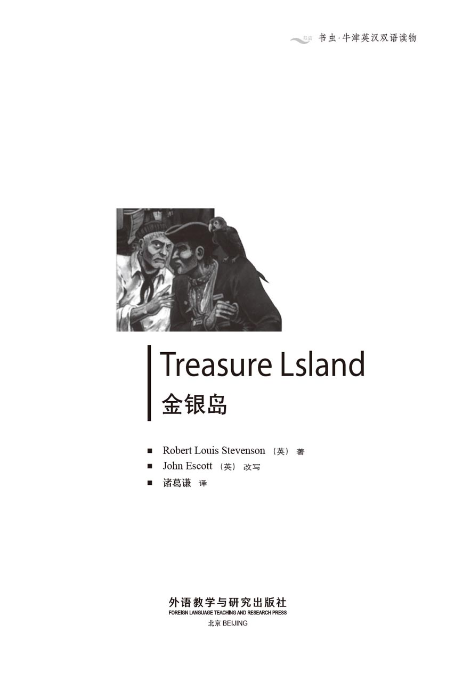
版权页
京权图字01-97-0342
Originally published by Oxford University Press, Great Clarendon Street, Oxford. © 1993
This edition is licensed for sale in the People's Republic of China only and not for export therefrom.
'Oxford' is a registered trademark of Oxford University Press.
只限中华人民共和国境内销售，不包括香港特别行政区、澳门特别行政区及台湾省。不得出口。
图书在版编目（CIP）数据
金银岛 = Treasure Island／（英）史蒂文森（Stevenson, R. L. ）著；（英）爱斯科特（Escott, J. ）改写；诸葛谦译．—北京：外语教学与研究出版社，1998.1（2015.3 重印）
（书虫·牛津英汉双语读物）
ISBN 978-7-5600-1418-0
Ⅰ．金… Ⅱ．①史…②爱…③诸… Ⅲ．小说—对照读物—英、汉 Ⅳ．H319.4：I
中国版本图书馆CIP数据核字（98）第07728号
出版人： 蔡剑峰
责任编辑：朱云奇
出版发行：外语教学与研究出版社
社 址：北京市西三环北路19号（100089）
网 址：http://www.fltrp.com
版 次：1998年11月第1版
书 号：ISBN 978-7-5600-1418-0
* * *
凡侵权、盗版书籍线索，请联系我社法律事务部
举报电话：（010）88817519
电子邮箱：banquan@fltrp.com
法律顾问：立方律师事务所 刘旭东律师
中咨律师事务所 殷 斌律师
简 介
简 介
年轻的吉姆·霍金斯躺在床上，梦见宝藏和海上历险。过几天这一切都将成为现实。他将要和他的朋友，乡绅屈利劳尼、大夫李甫西乘伊斯帕尼奥拉号帆船离开英格兰到南方的金银岛去寻宝。
岛上的宝藏过去属于一个叫弗林特的海盗，他把那些宝藏埋藏在岛上一个秘密的地方。弗林特船长现在已经死了，但曾和他一起出海的海盗还活着，他们也想找到弗林特的宝藏。他们不知道金子在哪儿，但他们会不择手段地去找。他们这伙人中有老瞎子皮尤，一个叫黑狗的人，还有一个一条腿的海员……他们是那些海盗中最危险的一伙。
罗伯特·路易斯·史蒂文森，1850年生于苏格兰的爱丁堡，学过法律，但在21岁时决定开始写作，《杰克博士和海德医生》和《金银岛》是他的代表作。1894年病逝于萨摩亚岛。
目录
1 The old seaman
1
The old seaman
Squire Trelawney, Dr Livesey, and the others have asked me to write down all I know about Treasure Island. My name is Jim Hawkins, and I was in the story right from the start, back in 17—. I was only a boy then, and it all began at the time my father owned the Admiral Benbow inn, at Black Hill Cove. I remember so clearly the day when the old seaman came to stay—I can almost see him in front of me as I write.
He arrived with his sea-chest, a tall, strong man with a cut across one cheek. He sang that old sea song as he walked up to the inn door:
Fifteen men on the dead man's chest—
Yo-ho-ho, and a bottle of rum!
The old seaman called for a glass of rum, and stood outside, drinking and looking around. Our inn was on the cliffs above Black Hill Cove, and was a wild, lonely place. But the seaman seemed to like it.
'Do many people come here?' he asked.
'No,' my father told him.
'Then it's the place for me,' said the seaman. 'I'll stay here for a bit. You can call me Captain.' He threw down three or four gold coins. 'Tell me when I've spent all that.'
He was a silent man. All day he walked around the cove, or up on the cliffs; all evening he sat in a corner of the room, and drank rum and water. He only spoke to our other customers when he was drunk. Then he told them terrible stories of his wild and criminal life at sea. Our customers were mostly quiet, farming people; the captain frightened them and they soon learned to leave him alone.
Every day, he asked if any seamen had gone along the road. At first we thought he wanted friends of his own kind, but then we began to understand that there was a different reason. He told me to watch for a seaman with one leg and to let him know the moment when a man like that appeared. He promised to give me a silver coin every month for doing this. I dreamed about this one-legged seaman for many nights afterwards.
The captain stayed week after week, month after month. His gold coins were soon used up, but my father was a sick man and afraid to ask for more.
Dr Livesey came late one afternoon. After he had seen my father, he had dinner with my mother, then stayed to smoke his pipe. I noticed the difference between the doctor with his white hair and pleasant way of speaking, and that dirty, heavy, red-faced seaman, drunk with rum.
The captain began to sing his song:
Fifteen men on the dead man's chest—
Yo-ho-ho, and a bottle of rum!
Drink and the devil had killed off the rest—
Yo-ho-ho and a bottle of rum!
Dr Livesey did not like the song. He looked up angrily before he went on talking to old Taylor, the gardener. Others in the room took no notice of the song. The captain beat the table with his hand for silence. The voices in the room died away, all except Dr Livesey's. The doctor continued to speak.
The captain swore softly, then said, 'Silence!'
'Are you speaking to me, sir?' asked the doctor.
'Yes,' the captain told him, swearing again.
'I have only one thing to say to you, sir,' replied the doctor. 'If you keep on drinking rum, the world will soon be free of a dirty scoundrel!'
The captain jumped to his feet with a knife in his hand, but the doctor never moved. He spoke to the captain in a calm and clear voice so that others in the room could hear:
'If you don't put that knife away, I promise you shall die a criminal's death under the law.'
Then followed a battle of looks between them, but the captain soon put away his weapon and sat down like a beaten dog. Soon after, Dr Livesey rode away on his horse. The captain was silent for the rest of the evening, and for many evenings afterwards.
squire [ˈskwaiə] n. [英]乡绅；（某一地区）最大的地主；[美]治安官。(esp. formerly) the main landowner in an English village or country place.
treasure [ˈtreʒə] n. 金银财宝，财富，珍品 wealth in the form of gold, silver, jewels, etc. 同义词：prize, value. treasure-house 宝库
admiral [ˈædmərəl] n. 海军将军；海军上将 the chief or head officer of a number of ships: a full ～ （美国）海军上将；a vice ～ 海军中将；a rear ～ 海军少将；an ～ of the fleet [英]海军元帅。
seaman [ˈsiːmən] n. 海员，水手 a sailor on a ship, other than an officer. 同义词：mariner, sailor, bluejacket. ～ship n. 船舶驾驶术；航海技术；船艺。
rum [rʌm] n. 朗姆酒 a strong drink liked by sailors; a strong alcoholic drink made from the juice of sugar.
afterwards [ˈɑːftəwədz] ad. 以后，过后，后来 later; after that: She stayed for a while ～. 她后来又待了一些时候。The meeting will postponed till ～. 会议将延至以后举行。
use up 用完，用光，耗尽 to finish completely: We have used up our sugar. 我们的糖用完了。～ up one's energy 筋疲力尽。
gardener [ˈgɑːdənə(r)] n. 园丁，园林工人；园艺家 the person that works in a garden, making plants grow.
die away 消失，渐渐停止 (esp. of sound, wind, light) to fade and become less and less and cease: His footsteps ～ d away in the darkness. 他的脚步声在黑暗中渐渐远去。
reply [riˈplai] v. 回答，回复 to answer; say or do as an answer: I asked him where to go, but he didn't ～. 我问他去哪儿，可是他不回答。
swear [swεə] v. 宣（誓），立（誓），发（誓），咒骂 to promise formally or by an oath; to curse: ～ in 宣誓就职。同义词：curse。～word n. 诅咒，骂人语。过去式：swore；过去分词：sworn。
老海员
1 老海员
乡绅屈利劳尼、李甫西大夫和其他几位绅士让我把金银岛的故事从头至尾写下来。我的名字叫吉姆·霍金斯，我经历了寻宝的全过程，故事始于公元一千七百多年。那时我还是个孩子，我父亲在布莱克希尔湾开了一家名叫“本葆将军”的客店。我清楚地记得那天客店来了一位老海员——他现在就浮现在我眼前。
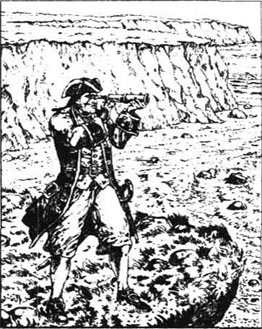
他是个高个子，而且很健壮，脸上有一道伤疤，手里提着一个海员手提箱。他来到客店时唱着那支水手老调：
十五个人趴在死人身上——
唷呵呵，快来尝一瓶朗姆酒！
老海员要了一杯朗姆酒，站在客店外面，一边喝酒，一边向四周观望。我们的客店位于布莱克希尔湾的悬崖上，一个荒野的地方。但那个海员好像对这里很感兴趣。
“有很多人来这里吗？”他问。
“不。”我父亲说。
“那么这就是我要找的地方，”老海员说，“我要在这儿住上一段时间，你们叫我老船长好了。”他拿出三四个金币，“钱花完了就告诉我。”
他是个沉默的人，整天在海湾走来走去，或是站在悬崖上；晚上则坐在屋子的一个角落，喝着搀水的朗姆酒。他只在喝醉时才和别的客人说话。那时他就给客人们讲他在海上野蛮和罪恶生活的可怕经历。我们的客人大都是生性安静的农民；老船长的经历令他们惊恐不安，后来他们就避免和他在一起了。
每天他都问有没有水手从此路过。开始我们以为他是想念自己的朋友，后来我们才意识到还有别的原因。他告诉我要注意一个一条腿的水手，如果此人一出现，立刻向他报信。他许诺每月给我一个银币。那以后我经常梦到他说的那个一条腿的水手。
老船长住了一个星期又一个星期，一个月又一个月。他预付的那点钱早就花光了，但我多病的父亲始终没敢向他再要。
一天傍晚，李甫西大夫来了。他看过我父亲之后，就和我母亲一起吃饭，然后坐在一边抽他的烟斗。我注意到：李甫西大夫举止文雅得体，头发花白，和那位喝醉酒的海员形成鲜明对照，后者肥胖、肮脏、面红耳赤。
老船长又唱起那支水手老调：
十五个人趴在死人身上——
唷呵呵，快来尝一瓶朗姆酒！
其余的都成了酒和魔鬼的牺牲品——
唷呵呵，快来尝一瓶朗姆酒！
李甫西大夫不喜欢这首歌。他抬起头来生气地看了老船长一眼，然后继续和老花匠泰勒聊天。屋里其他人都没有注意老船长唱的歌，老船长使劲拍了一下桌子，让大家安静下来。屋里顿时没了声音，只有李甫西大夫仍在说话。
老船长轻声骂了一句，喊道：
“安静！”
“你在对我说话吗，先生？”大夫问。
“对。”老船长说，又夹着一句咒骂。
“我只想对你讲一句话，先生，”大夫说，“如果你还不戒酒，这世界上很快就会减少一个十足的混蛋！”
老船长跳起来，手里拿着一把刀，但李甫西大夫纹丝未动。他用清晰、洪亮的声音对老船长说话，以使屋里的人都能听清：
“如果你不把刀收起来，我担保你会被送上绞架的。”
他们的目光对峙了一会儿，老船长终于收起了刀子，像一条斗败的狗一样坐在那里。过了一会儿，李甫西大夫骑马走了。这天晚上，老船长没再吭声，以后好几个晚上他也挺老实。
2 Black Dog
2
Black Dog
One January morning, the captain got up early and walked down to the beach. It was a cold winter's day with the sun still low in the sky. My mother was upstairs with my father, who was now very ill. That year the winter was long and hard, and we knew my father would not see another spring.
I was getting the table ready for the captain's breakfast. Suddenly, the door of the inn opened and a man stepped inside. I had never seen him before. He wore a sailor's short sword by his side, and I noticed he had only three fingers on his left hand.
I asked him what he wanted and he said, 'I'll take a glass of rum.' But before I could fetch it, he told me to come near him. 'Is this table for my old friend Bill?' the stranger asked, with a terrible smile.
I told him I did not know his friend Bill and the breakfast was for a man who was staying at the inn. 'We call him the captain,' I said.
'Does he have a sword cut on his face?' he asked.
'Yes,' I said.
'That's Bill,' said the stranger. 'Is he here?'
I told him the captain was out walking, and the man waited, like a cat waiting for a mouse. I did not like the look on his face and was sure the captain would not be pleased to see him.
When the captain came back, the man pulled me behind the door. The captain opened the door and walked across the room.
'Bill,' said the stranger.
The captain turned quickly and saw us. The colour went from his face and he looked old and sick. 'Black Dog!' he said. He stared at the stranger. 'And what do you want?'
'I'll have a glass of rum,' said Black Dog, 'then you and I'll sit and talk like old friends.'
I fetched the rum and they told me to go away. I went out of the room, but the voices became louder.
'No, no, and that's an end of it!' I heard the captain shout. 'If one is caught, we'll all be caught!'
There were more shouts, and then the sound of the table crashing over. Next, I heard the sound of swords, then out ran Black Dog with blood running down his shoulder. He ran out of the inn and along the road. In a few seconds, he had disappeared from sight.
The captain watched him go, then said, 'Jim, quick! Bring me rum.'
He turned and went back into the inn, but he could only just stand on his feet. I realized he was feeling ill and ran to fetch the rum. Then I heard him falling and hurried back to find him on the floor.
My mother heard the noise and came downstairs. We lifted the captain's head. His eyes were closed and his face was a terrible colour.
At that moment Dr Livesey arrived to see my father. He looked at the captain and said to my mother: 'His heart can't take much more of this. I told him drinking rum would kill him, and it nearly has.'
The captain opened his eyes and tried to sit up. 'Where's Black Dog?' he asked.
'There's no Black Dog here,' said the doctor, 'Get on your feet and I'll help you to your bed.'
upstairs ad. at or to the upper floor(s) of a building. 在楼上，往楼上：He ran upstairs. 他跑上楼去。反义词：downstairs。
stranger n. a person who is unfamiliar. 陌生人；陌生事物：Her mother told her not to trust ～s. 她母亲告诉她别相信陌生人。
quickly [ˈkwikli] ad. 快，快速地 swift; soon finished: ～-drying 快干的。You have to think ～ with the mind and act ～ with the body. 你必须脑子转得快和行动得快。形容词：quick.名词：quickness.
realize [ˈriəlaiz] v. 实现；认识到，认清，了解 to carry out; to understand and believe (a fact): He did not ～ his ambition until he was past middle age. 他直到中年才认识到他的志向。同义词：actualize, embody。
closed a. not open. 关闭的。
sit vi. to rest in a position with the upper body upright and supported at the bottom of the back, as on a chair or other seat. 坐：就座。They all sat keeping warm by the fire. 他们都坐在火周围取暖。过去式：sat；过去分词：sat。
黑狗
2 黑狗
1月的一个清晨，老船长很早就起来走到海边。那是一个严寒的冬日，太阳还没有升高。我母亲正在楼上照顾病重的父亲。那一年的冬天又漫长又寒冷，我们都知道父亲大概难以活到来年的春天了。
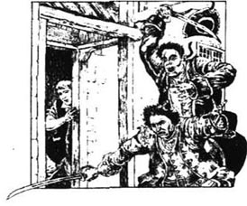
我正在准备老船长的早餐。忽然，客店的门被推开，一个陌生人闯了进来。我以前从未见过他。他腰间佩着一把水手的短剑，我注意到他左手只有3个手指。
我问他要点什么，他说：“我要一杯朗姆酒。”我正要去取酒，他把我叫过去。“桌上的早餐是不是为我的老朋友比尔准备的？”他狞笑着问道。
我告诉他我不知道他的朋友比尔是谁，早餐是为住在店里的一位客人准备的。“我们都管他叫老船长。”我说。
“他脸上有一道剑伤吗？”他问。
“是的。”我说。
“他就是比尔，”他说，“他在这儿吗？”
我告诉他老船长出去散步了，然后他就等着，像猫在等老鼠一样。我不喜欢这个陌生人的表情，我相信老船长一定不喜欢他。
老船长回来了，陌生人把我拉过去躲在门后。老船长推开门走进屋来。
“比尔。”陌生人叫道。
老船长转过身来看见了我们，脸上顿时变了颜色，一眨眼工夫变得衰老而虚弱。“黑狗！”老船长喊道，他盯着陌生人，“你要怎么样？”
“我想要一杯朗姆酒，”黑狗说，“然后我们坐下来像老朋友那样聊聊天。”
我把朗姆酒取来，他们让我离开。我离开房间，他们说话的嗓门越来越高。
“不，不，事情到此为止！”我听见老船长嚷着，“如果一个人被抓住，我们就会全都被抓住！”
喊声越来越大，还有桌子被掀翻的响声。接着，我听见刀剑的响声，旋即我看见黑狗肩上淌着血没命地往外跑。他跑出客店，上了那条小路，不一会儿就没了踪影。
老船长看见他跑了，就对我说：“吉姆，快拿朗姆酒来！”
他要转身回到客店，但无法挪动脚步。我意识到他病了，赶紧跑去拿酒。我听见响声马上跑回来，看见老船长躺在地上。
我母亲被响声惊动，下楼来帮忙。我们把老船长扶起来，他紧闭着双眼，脸色十分可怕。
正在这时李甫西大夫来看我父亲，他看了看老船长后对我母亲说：“他的心脏受不了这个。我早就警告过他不能喝这么多酒，现在正是酒害了他。”
老船长睁开眼，试着坐起来。“黑狗在哪儿？”他问。
“这里没有黑狗，”大夫说，“站起来吧，我扶你到床上去。”
3 The black spot
3
The black spot
Later that day, I took the captain a cool drink.
'Jim,' he said, 'you're the only person here worth anything. You'll bring me some rum, won't you, boy?'
'The doctor said—' I began.
He swore about the doctor. 'Look, Jim, one glass is all I ask. I'll pay you for it.'
'The only money I want,' I said, 'is the money you owe my father. But I'll get you one glass of rum, no more.'
He was grateful and drank it quickly. 'Did the doctor say how long I must lie in my bed!' he asked.
'A week,' I told him.
'A week!' he cried. 'I can't do that. They'll have the black spot on me by then. They'll come for me.'
'Who will? Black Dog?' I said.
'Yes, but there's worse than him. It's my old sea-chest they want, but I'll show them! Jim, if I get the black spot, you go to that doctor. Tell him to bring a crowd of law officers and a local judge to the inn. They can catch Flint's crew—all that are left—at the Admiral Benbow. I was Flint's first ship's officer, and I'm the only one who knows the place. He told me when he was dying. But don't call the law unless they give me the black spot, or if you see the seaman with one leg—he's worse than any of them.'
'But what is the black spot, captain?' I asked.
'That's a message, boy. I'll tell you if they give me that. Keep your eyes open, Jim, and I'll give you half of everything I have.' He talked for a little longer then fell into a heavy sleep, and I left him.
That night, my father died. This put all other thoughts to one side and I had no time to worry about the captain.
The next morning, the captain came downstairs. He didn't eat much food but he drank more rum than usual. He helped himself and we were too busy to stop him. There were visits from neighbours, and my father's burial to arrange.
The day after the burial was cold and foggy. At about three o'clock in the afternoon, I was standing at the door of the inn when I saw a blind man coming along the road. He was feeling his way with a stick.
'Will any kind friend tell a poor blind man where he is?' he said.
'You're at the Admiral Benbow inn, Black Hill Cove, my good man,' I said.
'I hear a young voice,' he said. 'Will you give me your hand, my kind young friend, and take me inside?'
I held out my hand, and the terrible, soft-speaking, eyeless man took hold of it like a dog biting a bone. He pulled me violently towards him.
'Now, boy,' he said, 'take me to the captain or I'll break your arm!' And I had never heard a voice so cruel and cold.
I was so frightened by the blind man's violence that I obeyed him without question, and took him into the room where the sick captain was sitting. He saw the blind man and a look of fear passed across his face.
'Sit where you are, Bill,' said the blind man. 'I can't see, but I can hear a finger move. Hold out your right hand.'
I watched him put something in the captain's hand. 'And now that's done,' said the blind man, and he quickly went out of the inn. I heard his stick tap-tap-tapping away along the road.
The captain opened his hand and looked into it. 'Ten o'clock!' he cried, and jumped up. He put his hand round his neck, made a strange sound, and fell face down on to the floor.
I ran to him, calling to my mother. But the captain was dead.
grateful a. feeling or showing thanks to another person. 感谢的，感激的：I am very grateful to you for your help. 我非常感激你对我的帮助。同义词：thankful. gratefully (ad.), gratefulness (n.)。
crew n. all the people working on a ship, plane, etc.; a group of people working together. 全体船员，全体乘务员；水手们；同事们。
foggy a. not clear because of fog; very misty. 有雾的，多雾的。foggily (ad.), fogginess (n.). Foggy Bottom. 雾谷（指美国国务院）。
obey [əˈbei] v. 服从，顺从，听从 to do what one is asked or ordered to do (by someone): ～ or you will be punished. 你如果不服从就会受罚。
inn [in] n. 小旅馆，小客栈，小酒店，小饭店 a small hotel or place where one can stay and/or drink alcohol, eat meals, etc.: inn keeper, inn holder 小旅馆老板。
黑券
3 黑券
那天晚些时候，我送了一杯清凉饮料到老船长屋里去。
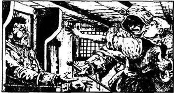
“吉姆，”他说，“这里我只看得起你一个人。你给我拿一杯朗姆酒来好不好？”
“大夫说——”我开始说。
他立即咒骂起大夫来，“听着，吉姆，我只要一杯朗姆酒，我可以付钱。”
“我想要的，”我说，“只是你欠我父亲的钱。我可以给你一杯朗姆酒，不能再多了。”
他非常感激我，然后把酒一饮而尽。“大夫说我要在床上躺多久？”他问。
“一个星期。”我告诉他。
“一个星期！”他嚷道，“那可不行，他们会送黑券来的，他们会来找我的。”
“谁，黑狗吗？”我问。
“对，还有比他更坏的呢。他们想要我的水手箱，我会给他们看的。吉姆，如果我搞到那张黑券，你就去找那个大夫，叫他召集一群警官来，包括治安推事，叫他们都到客店来。这样就可以把弗林特一帮全抓起来——所有余下的人。我以前是弗林特船上的大副，只有我一个人知道那个地方。他临死前告诉我所有的事。他们给我送黑券之前，你先别去报官，除非你看见一条腿的水手——那个独脚水手是最坏的。”
“黑券是什么东西，老船长？”我问。
“那是一条讯息，孩子。他们送来后我会告诉你的。你要留心守望，吉姆，我以后什么都会和你平分的。”他又说了几句话就沉沉地睡去，于是我就走开了。
那天晚上我父亲死了。我只好把别的事情放在一边，也没有时间想老船长了。
第二天早上，老船长下楼来。他没吃多少东西，但比平时喝了更多的朗姆酒。他自斟自饮，我们也无暇阻止他。很多邻居和朋友过来探望，我父亲的葬礼也需要安排。
我父亲葬礼的第二天，天很冷，雾很浓。大约下午三点钟时，我站在客店门口，刚好看见一个瞎子沿着大路走来，他用一根棍子在前面探路。
“哪位好心的人能告诉我这儿是什么地方？”他问。
“我的朋友，你在布莱克希尔湾的本葆将军客店。”我说。
“我听见一个少年的声音，”他说，“好心的孩子，你能不能把手伸给我，带我到店里去？”
我伸出一只手，立刻被那个说话温和的瞎子紧紧钳住，他把我粗暴地拉到他身边。
“现在，孩子，”他说，“领我到老船长那儿，否则我就弄断你的胳膊。”我还从来没听见过这么冷酷、狠毒的声音。
我怕得要死，只好立刻从命，带他到生病的老船长住的房间去。老船长看见了瞎子，脸上充满了恐惧。
“比尔，待在那儿别动，”瞎子说，“我看不见，但我知道你的手在动，伸出你的右手。”
我看见瞎子把一样东西放在老船长手里。“现在事情了结了。”瞎子说，然后迅速走出客店。大路上留下了木棍探路的嗒嗒声。
老船长收回手，仔细看自己的手心。“10点钟！”他喊道，然后跳起来。他一只手卡住自己的脖子，怪叫一声，扑倒在地。
我一边跑过去，一边喊我的母亲。但老船长已经死了。
4 The sea-chest
4
The sea-chest
On the floor close to the captain's hand was a little round piece of paper, blackened on one side. I had no doubt that this was the black spot. On the other side was some writing: You have till ten o'clock tonight. Our old clock reminded me it was now six.
Quickly, I told my mother everything, and we decided to run to the village to hide, before the blind man and his friends returned.
'But first,' my mother said bravely, 'we have to get the key to the sea-chest. Why shouldn't we take the money the captain owes us? His friends certainly won't give it to us!'
The key was around his neck on a piece of string. I cut the string, and we hurried up to his room where the chest had stood since the day he came. There was a letter 'B' painted on the top of it. Inside were two very fine pistols, some silver, pipe-tobacco, and an old clock. Underneath these things were some papers tied up inside a cloth, and a bag of gold coins.
'I'll show these scoundrels I'm an honest woman,' said my mother. 'I'll take what I'm owed and no more.' She began counting the money. There were all kinds of gold coins in the bag—big French gold coins, Spanish doubloons and pieces of eight. It was slow work to find the English gold guineas that we needed.
We were half-way through when I heard a sound that filled my heart with fear; the tap-tapping of the blind man's stick on the frozen road. Then it knocked against the inn door and we did not breathe. But then the tapping started again and slowly died away.
'Mother,' I said, 'take it all, and let's go before the blind man comes back with his friends.'
But my mother went on counting until we heard a low shout coming from the hill outside. 'I'll take what I have,' she said, jumping to her feet.
'And I'll take this for what I'm owed,' I said, and picked up the cloth of papers.
We ran from the inn and along the road to the village. It was dark but there was a full moon. We heard running feet coming towards us.
'Take the money and run on,' my mother said breathlessly. But I refused to leave her. Quickly, I pulled her off the road and down under a small bridge. There we hid, trembling.
Not a moment too soon. Seven or eight men were running past us. Three men ran in front, and I saw that the one in the middle was the blind man. Silently, I climbed back up to the road and lay in the long grass to watch what happened.
'Down with the door!' the blind man shouted.
Four or five of them broke down the door of the Admiral Benbow and ran inside. There was a shout: 'Bill's dead!'
The blind man swore at them. 'Look upstairs and find the chest!' he cried.
I could hear their feet on the stairs, then a voice shouting down to the blind man in the road outside: 'Pew! They've been here before us. The money's here but Flint's papers have gone!'
'It's those people of the inn—it's that boy!' shouted the blind man Pew. 'Search and find'em.'
Just then there came the sound of horses and riders thundering along the road. It was heard by the men in the inn, and in a second they were out in the road, running into the darkness of the fields. They did not wait for blind Pew, who tried to follow them, tapping wildly with his stick. 'Johnny, Black Dog! You won't leave your old friend Pew, boys—not old Pew!'
He was still in the middle of the road when the horses thundered up to the inn. Pew turned with a scream, but he turned the wrong way, and ran straight into the first of the horses. The rider tried to save him, but failed. Down went Pew, under the horse's feet, with a cry that rang high into the night. It was all over in seconds, and Pew didn't move again.
I jumped up and shouted to the riders. One of the men was Captain Dance, the law officer from the nearby town. He had heard reports of a pirate ship in Black Hill Cove and had come looking for the pirates. I told him my story, and he and his men chased the pirates down into the cove. But by the time they got to the beach, the ship was already out to sea.
'Well,' said Captain Dance when he returned, 'at least we finished off Pew.'
We took my mother to a house in the village, then went back to the Admiral Benbow. Inside, everything was smashed and broken.
'What were they looking for, Hawkins?' asked Mr Dance.
'They got the money from the chest,' I said, 'but I think I have what they wanted most. I'd like to get it to a safe place. I thought, perhaps, Dr Livesey...'
'Quite right,' said Mr Dance. 'He's the local judge, and I ought to report Pew's death to him or Squire Trelawney. I'll take you with me to his house.'
Dr Livesey was not at his house but with the squire at his home, so Captain Dance and I went on there.
I had never seen Squire Trelawney so near. He was a big tall man, with a red face, and was sitting beside a fire with Dr Livesey. 'Come in, Mr Dance,' he said.
Mr Dance gave his report and both men listened with deep interest.
'And so, Jim,' said the doctor, 'you have the thing that they were looking for, have you?'
'Here it is, sir,' I said, and gave him the papers tied inside the cloth. The doctor looked at them and put them quietly in the pocket of his coat. After that, Mr Dance went away and I was given some food.
'And now, squire,' said the doctor, 'you have heard of this Flint, I suppose?'
'Heard of him!' cried the squire. 'He was the worst pirate that ever sailed. The Spanish used to tremble just to hear his name!'
'Well, I've heard of him myself,' said Dr Livesey. 'But the question is, did he have money?'
'Money!' said the squire. 'Of course Flint had money! Those scoundrels were after it.'
'Well then, suppose I have here in my pocket a paper that shows where Flint hid his treasure,' said the doctor. 'Would the treasure be worth looking for?'
'Worth looking for!' cried the squire, with great enthusiasm. 'I'll tell you what it's worth. I'll prepare a ship at Bristol, take you and Hawkins with me, and have that treasure if I have to search for a year!'
We opened the cloth and found two things—a book and a paper. The book gave a list of all the money Flint had stolen from different ships during twenty years at sea. The doctor opened the paper and found a map of an island. There was a hill in the centre marked Spyglass, and several names that had been added later. There were three big black crosses—two in the north of the island and one in the south-west. Beside the last cross were the words: Most of the treasure here. On the back of the paper, the same person had written:
Tall tree. Spyglass shoulder, to the North of North-North-East.
Skeleton Island East-South-East and by East.
The squire and Dr Livesey were delighted.
'Tomorrow I start for Bristol,' said Squire Trelawney. 'In three weeks we will have the best ship, sir, and the finest crew in England. Hawkins can come as cabin-boy. You, Livesey, are the ship's doctor. I am admiral. We'll take three of my men, Redruth, Joyce, and Hunter.'
'Trelawney,' said the doctor, 'I'll go with you. So, I am sure, will Hawkins. There's only one man I'm afraid of.'
'And who's that?' cried the squire. 'Name the scoundrel!'
'You,' said the doctor, 'because you cannot keep silent. We aren't the only men who know of this paper. Those who broke into the inn tonight want to find the same treasure. We must none of us go alone until we get to sea. You'll take Joyce and Hunter to Bristol. Meanwhile, Jim and I will stay together. And not one of us must say a word about what we have found.'
'Livesey,' replied the squire, 'you're always right. I'll be as silent as a dead man.'
scoundrel n. a wicked, esp. bold and selfish, man. 坏蛋，恶棍；流氓。～ly (ad.). 同义词：villain, blackguard。
honest a. (of people) not likely to lie or to cheat. 诚实的；老实的；正直的：Be ～ in business. 做生意要老老实实。honestly (ad.), honesty(n.).
towards prep. in the direction of, without necessarily reaching. 向，朝；面对：She was walking ～ town when I met her. 我见到她时她正向城里走去。
refuse v. not to accept or do or give. 拒绝；回绝；拒绝接受：It was an offer he felt he couldn't ～. 这是一个他觉得自己无法不接受的提议。
break down to destroy (something); reduce to pieces. 打破，毁掉，破除：～ the traditional barrier between language and literature 扫除语言和文学之间的传统障碍。
just ad. exactly; (at) the exact time or place. 正好，恰好：He came just as I was leaving. 他来时我正好要走。～ then 正在那时。
scream n. a loud cry. 尖叫声。
pirate n. a person who sails the seas stopping and robbing ships. 海盗，海上掠夺者。同义词：freebooter。
smash [smæʃ] v. 打碎，打破；摧毁 to (cause to) break into pieces violently: The boy smashed the vase with a hammer. 男孩用锤子把花瓶砸碎了。
tie [tai] v. （用带，绳，线等）系，缚，拴，捆 to fasten with a cord, rope, etc.: The package came ～d with a red ribbon. 包裹来了，是用一根红丝带捆扎的。
enthusiasm n. a strong feeling of interest and admiration. 热情；热心；热忱；积极性：The play aroused his ～. 这出戏引起他极大的兴趣。同义词：fervor, passion。反义词：apathy。
steal v. to take (what belongs to other) without any right. 偷盗，窃取（过去式：stole；过去分词：stolen）：Someone stole a painting from the museum. 有人从展览馆偷走了一幅画。
skeleton n. the framework of all the bones in a human or animal body. 骨骼；骷髅：a ～ in the cupboard 不可外扬的家丑，隐情。I feel that she has a couple of ～s in her cupboard. 我觉得她有几件不可告人的丑事。
delight n. a high degree of pleasure or satisfaction; joy. 高兴，愉快，快乐：To the teacher's great delight, all his students passed the examination. 使老师极为高兴的是他的学生全部考试及格。delighted (a.), delightedly(ad.).
cabin-boy n. a boy who is a servant on a ship. 船舱服务员：At 15 he was a ～, at 50 commander of the navy. 15岁时他是个船上服务员，但50岁时就是海军司令了。
水手箱
4 水手箱
老船长手边的地上有一小片圆的硬纸，一面涂着黑色。我相信这就是所谓的“黑券”。黑券的另一面写着：今晚10点以前答复。墙上的老钟刚好敲了6下，告诉我现在6点钟了。
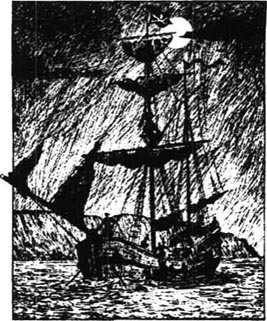
我立即把一切都告诉了母亲，我们决定在瞎子和他的人回来之前逃到村子里躲起来。
“但是首先，”我母亲勇敢地说，“我们必须找到水手箱的钥匙，干吗不把老船长欠的钱找回来呢？他的朋友肯定不会给我们的！”
水手箱的钥匙套在老船长的脖子上，我割断绳子，取下钥匙，赶紧到他房间去。从他来住店的那一天起，他的箱子一直放在那里。他的水手箱顶部涂着一个字母“B”，里面有两把精制的手枪，一些银锭，一些烟草，一只老式表。这些东西下面还有卷在布里的几页纸和一袋金币。
“我要让那些流氓知道，我是个诚实的女人，”母亲说，“我只要收回欠账，一个子儿也不多拿。”她开始数钱。那一个袋子里各国钱币都有：法国的金路易，西班牙的杜布龙金币和每枚8个里亚尔的银币。从中找到我们需要的英国畿尼是件很费时的事。
钱才数了一半的时候，我听到一种可怕的声音，是那个瞎子用棍子探路的嗒嗒声。接着我们听到棍子敲门的声音，我们屏住呼吸。然后探路的嗒嗒声又响起来，慢慢地消失了。
“妈妈，”我说，“把这些都拿上，我们得赶在瞎子和他的人到来之前逃走。”
可是我母亲还是继续数钱。这时，从小山上传来一声很轻的呼哨。“我先把数好的钱拿走。”她说，忽然跳起来。
“我把这东西带走抵账。”我捡起那个布裹着的小包。
我们跑出客店向村子逃去。天黑了，但月亮很圆。我们听见有好些人朝这边跑来。
“你拿了钱快跑吧。”我母亲上气不接下气地说。我不能丢下她不管。我很快把她拖离大路，来到一座桥下躲起来，浑身直发抖。
不一会儿就有七八个人跑过去。其中有三个人跑在前面，我认出中间的就是那个瞎子。我悄悄地爬到路上，藏在草丛里观察发生的一切。
“把门撞开。”瞎子喊道。
四五个人撞开了本葆将军客店的门，冲了进去。有人喊道：“比尔死了。”
瞎子又骂他们。他嚷道：“上楼去找水手箱。”
我可以听见他们匆匆上楼的声音，不一会儿又有人冲着外面路上的瞎子喊道：“皮尤，他们在我们之前来过，钱还在这儿，可弗林特的藏宝图不见了。”
“是客店的那伙人，那个孩子干的，”瞎子皮尤喊道，“给我找到他们。”
正在这时路上传来了马蹄声，客店里的人听到后马上跑出来，不一会儿就消失在田间的路上。没人等瞎子皮尤，他想跟上他们，用木棍使劲地敲着地，“约翰尼，黑狗，别把你们的伙伴老皮尤丢下不管！”
马队朝客店冲过来时皮尤正走在路中间，他尖叫一声转过身来，但转错方向，径直朝着领头的马跑去。骑马人努力想救他的命，但已来不及了，皮尤的一声惨叫响彻夜空，四只马蹄从他身上践踏而过。只有几秒钟时间，他便不再动弹。
我跳起来招呼骑马的人，他们中一个人是丹斯上尉，附近一个镇的法官。他得悉布莱克希尔湾出现了一只海盗船，便到我们这边来搜捕海盗。我给他讲了我们的经历，他和他的人就去海湾追海盗船了。但他们到海边时，海盗船已走远。
“不过，”丹斯上尉回来后说，“至少我们解决了皮尤。”
我母亲被安顿在村子里的一间房内，然后我们回到本堡将军客店，客店内的一切都被破坏了。
“他们想找什么呢，霍金斯？”丹斯先生问道。
“他们从水手箱里拿走了钱，”我说，“但我有他们想要的东西。我希望把它放到一个稳妥的地方。我想，也许，李甫西大夫……”
“对，说得对，”丹斯先生说，“李甫西大夫是本地的治安推事，我应该向他或是乡绅屈利劳尼报告皮尤已死的事。我带你一起去他家。”
李甫西大夫不在家，据说他和乡绅在一起。于是我和丹斯先生去乡绅家。
我从来没这么近打量过乡绅屈利劳尼。他个子很高，暗红色的脸，和李甫西大夫坐在火炉旁边。“进来，丹斯先生。”他说。
丹斯先生报告了刚才发生的事，那两个人听得津津有味。
“那么，吉姆，”大夫说，“你说他们要找的东西在你身上，是不是？”
“在这儿，先生。”我说着把用布裹着的小包给他。大夫看了看，把小包静静地放在上衣口袋里。过了一会儿，丹斯先生走了，我坐下来吃了些东西。
“那么，乡绅先生，”大夫说，“你听说过这位弗林特船长，对吗？”
“怎么没听说过？！”乡绅大声说，“他是有史以来最残暴的一个海盗。西班牙人听到他的名字就发抖。”
“我也听到过他的名字，”李甫西大夫说，“但问题是，他有钱吗？”
“钱！”乡绅喊道，“弗林特当然有钱！那帮匪徒找的就是钱。”
“那么，假定我口袋里有弗林特藏宝的线索，”大夫说，“那宝藏值得去寻吗？”
“当然值得！”乡绅激动地嚷道，“如果你真的有那个线索，我就在布里斯托尔准备一条大船，带着你和霍金斯一起出海，哪怕花一年工夫也要找到宝藏。”
我们打开布包发现了两件东西，一本书和一张纸。书本上记载着弗林特20年来在海上从不同船上抢来的钱。大夫打开那张纸，一幅海岛地图展现在我们面前，岛的中部有一座小山，标着的名称是“望远镜山”，旁边有一些名字是后来注上的。图中有三个用墨水画着的叉叉：两个在岛的北部，一个在西南部。在西南部的那个叉叉旁边写着：大部分宝藏在此。在地图的背面同一个人写着：
望远镜肩上一棵大树，北北东偏北。
骷髅岛，东南东偏东。
乡绅和李甫西大夫都非常高兴。
“明天我就去布里斯托尔，”乡绅说，“只要过三个星期我们就能备好英国最好的船和精选的水手。霍金斯可以在船上当服务员；你，李甫西，当随船医生；我当船长。我们把我的伙计雷德拉斯，乔伊斯和亨特都带上。”
“乡绅先生，”大夫说，“我跟你一起去，而且我相信霍金斯也会去的。我只对一个人不放心。”
“对谁？”乡绅喊道，“把那混蛋的名字说出来！”
“你，”大夫说，“因为你不能保持沉默。不仅仅是我们知道这张图，那些冲进客店的人也想找到这些宝藏。出海之前我们谁也不能单独出门。你带着乔伊斯和亨特去布里斯托尔；我和吉姆在一起。关于我们的发现，我们中任何人都不能走漏一点风声。”
“李甫西，”乡绅说，“你说得对，我会守口如瓶的。”
5 I go to Bristol
5
I go to Bristol
Dr Livesey went to London, to find another doctor to look after his patients while he was away. I waited at his home with Tom Redruth. Weeks passed, and I spent many hours studying Flint's map and dreaming of treasure. Then a letter arrived, addressed to Dr Livesey 'or Jim Hawkins, if the doctor is away':
Old Anchor Inn, Bristol
1st March 17—
Dear Livesey,
I do not know whether you are at home or in London, so I am sending copies of this letter to both places.
The ship is bought and ready for sea. You never saw a better ship—and with the name Hispaniola. I got her through my old friend, Blandly, who, with everyone in Bristol, worked hard to find me a suitable ship when they heard the reason for our voyage—treasure, I mean.
'Dr Livesey won't like that,' I said to Tom Redruth. 'The squire's been talking.' I read on:
I wanted a crew of twenty men—as we may meet pirates or enemy ships—but I had the greatest difficulty finding six. Then good fortune brought me the very man that I needed. I met the man quite by accident, and we began a conversation. I learnt he was an old seaman who kept an inn, and he knew all the seamen in Bristol. The poor man had lost his health on shore and wanted to get work as a cook, and go to sea again.
I felt sorry for him and employed him immediately, to be the ship's cook. Long John Silver, he is called, and he has lost a leg fighting for his country. Well, sir, I thought I had only found a cook, but it was a crew I had discovered! Between Silver and myself, we got together a crew of the toughest seamen you can imagine.
I am in wonderful health, but I shall not enjoy a moment until my ship goes to sea. So come quickly, Livesey, do not lose an hour! And let young Hawkins go at once to say goodbye to his mother, and then come quickly to Bristol with Redruth.
John Trelawney
PS: Blandly found us an excellent man to be captain, and Silver found a man called Arrow to be first officer.
Next day, I went to the Admiral Benbow and said goodbye to my mother. I was sad to leave, but when Redruth and I began our journey to Bristol, my thoughts turned to the voyage and the search for treasure.
Mr Trelawney was waiting for us at an inn, near the sea. 'Here you are!' he cried when we arrived. 'The doctor came from London last night, so now the ship's company is complete. We sail tomorrow!'
After I had finished breakfast, the squire gave me a note to take to Long John Silver at the Spyglass Inn.
It was a bright little place where the customers were mostly seamen. As I entered, a man came out of a side room and I knew immediately he must be Long John. His left leg was cut off above the knee and he walked with a crutch under his left shoulder. He was tall and strong with a big, smiling face.
Now, when I read about Long John in Squire Trelawney's letter, I had been afraid he might be the one-legged seaman that old Bill had talked about. But one look at the man in front of me was enough. I knew old Bill, and Black Dog, and the blind man Pew. I thought I knew what a pirate looked like—a very different person from this clean and smiling man.
'Mr Silver, sir?' I asked, holding out the note.
'Yes, my boy,' he said. 'That' s my name. And who are you?' And then he saw the squire's letter and looked surprised. 'Oh!' he said loudly. 'I see you're our new cabinboy. I'm pleased to meet you.'
Just then, a customer got up suddenly and hurried to the door. I recognized him as the man with only three fingers on his left hand—the one who had come to the Admiral Benbow!
'Stop him!' I shouted. 'It's Black Dog!'
'I don't care who he is,' said Silver. 'He hasn't paid for his drinks. Run and catch him, Harry!'
A man jumped up and ran after Black Dog.
'What was his name?' asked Silver. 'Black what?'
'Dog, sir,' I said. 'Hasn't Mr Trelawney told you about the pirates? He was one of them.'
'A pirate! I didn't know that,' said Silver. 'I've seen him before, when he came with a blind man.'
'That was blind Pew, another pirate,' I said.
'That was his name!' said Silver.
I watched the sea cook carefully. But when the man Harry came back without the pirate, Silver seemed angry and I believed he was.
'I'll come with you to tell Mr Trelawney what's happened,' he said. 'This is a serious matter.'
As we walked back, Silver told me many interesting things about the ships that we passed. I began to think he was going to be a good companion to have when we were at sea.
When we got to the inn, the squire and Dr Livesey were there. Long John told them about Black Dog, saying, 'That was how it was, wasn't it, Hawkins?' And I had to agree. We were all sorry about Black Dog getting away, but there was nothing we could do.
'All the crew must be on board by four o'clock this afternoon,' Trelawney told Long John.
'Right, sir!' said the sea cook, and he left us to return to his inn.
'Trelawney,' said Dr Livesey, 'I don't always think you find the best men, but I'll say this: John Silver seems a good man. Now, let's go and see the ship!'
look after to take care of (someone or something). 照料，照顾，照管：He has looked after his elderly parents for many years. 他照料年迈的父母已多年了。
voyage n. a journey, usu. long, made by boat or ship. 航海，航行；旅行：go on a sea ～ 去航海旅行。同义词：journey, tour, trip。
employ vt. to use (a person) as a paid worker. 雇用：The company employs about 100 men. 这个公司雇用了大约一百人。employee: a person who is employed 被雇用者。employer: a person who employs others 雇用者。
shore n. the land along the edge of a large stretch of water. （江、河、湖泊、海洋等水域的）滨，岸：go on ～ 上岸。The ship reached ～. 船已到岸。同义词：coast, beach, seaside。
company n. companionship; fellowship. 一群人；（一）群；（一）队；（一）伙：A ～ of travellers are (或is) expected to arrive soon. 预计一批旅客很快就要到来。Two's ～, three's a crowd (或none). 〈谚〉两人结伴，三人不欢。
recognize v. to know again (someone or something one has met before). 认出，识别；认识：He was so much changed that I could hardly ～ him. 他变化太大，我简直认不出他来了。
pay v. to give (money) for goods bought, work done, etc.. 付钱给，给……报酬；出钱雇：They ～ their workers well. 他们给工人的报酬不错。过去式及过去分词：paid。
agree v. (with) to accept an idea, opinion, etc., esp. after unwillingness or argument; approve. （对计划、提议等）表示同意（to）；（对意见等）表示赞同：Do you agree to this arrangement? 你同意这个安排吗？I ～ will your argument. 我同意你的论点。
on board in (a ship or public vehicle). 上船（或火车、公共汽车、飞机等）；在船（或火车、公共汽车、飞机等）上：When everybody was ～, the ship sailed. 等所有的人都上了船，船启航了。
我去布里斯托尔
5 我去布里斯托尔
李甫西大夫去伦敦了，他去找人在他不在期间为他照看他的病人。我和汤姆·雷德拉斯在他家等他。时间过去了几周，我用了很多时间研究弗林特的藏宝图，有时梦想着得到那些宝藏。不久我们收到一封寄给李甫西大夫的信，上面写着：“如果大夫不在，请交吉姆·霍金斯。”

布里斯托尔老锚旅馆
17—年3月1日
亲爱的李甫西：
我不知道你是在伦敦还是回到了家里，所以我把这封信一式两份寄到两个地方。
船已购妥并装备好，正待出海。你无法想像比这更出色的帆船了——我们叫她伊斯帕尼奥拉号。我是通过我的老朋友布兰德利搞到这条船的。在布里斯托尔，我们发掘宝藏的消息一传开，大家都乐于为我们效劳。
“李甫西大夫对此不会满意的，”我对雷德拉斯说，“乡绅到底把事情说出去了。”我继续读下去：
我本想找20个船员——我们可能会遇到海盗或者敌船，可是费了很大劲才找到6个人。不过上帝保佑我不费力气就找到了我最需要的那个人。我十分偶然地碰上这个人，然后我们就聊起来。我了解到他是个老水手，现在在这里开一家旅馆，他认识布里斯托尔所有的海员。这个可怜的人在陆地上反而搞垮了身体，他想找个做厨师的活儿，以便再回到海上。
我听了以后十分难过，立刻把他雇用为我们船上的厨师。他叫“高个儿约翰”，姓西尔弗。他曾在为国家而战的战斗中失去了一条腿。先生，我以为只找到了一个厨师，可谁想到我因此又找到了好些水手！在西尔弗的帮助下，我找到了一伙最强壮的水手。
我现在身体状况很好，但在我们的船出海之前我简直无法安下心来。李甫西，快来吧，一小时也不要耽搁。让小霍金斯赶快回家和他母亲道别，由雷德拉斯陪他来布里斯托尔。
约翰·屈利劳尼
布兰德利找到一个出色的船长，西尔弗则找了一个叫埃罗的人做大副。又及。
第二天，我回到本葆将军客店和我妈妈道别。我离开母亲有点儿伤悲，可是当我和雷德拉斯踏上去布里斯托尔的旅程时，我的思绪就转到了寻宝的旅途上。
屈利劳尼先生在海边的一个旅店等我们。“你们终于来了！”我们到了以后他喊道，“大夫昨天晚上从伦敦赶来了。现在全船的人都齐了。咱们明天就出海！”
我吃完早点后，乡绅给了我一张纸条，让我给在望远镜酒店的“高个儿约翰·西尔弗”送去。
这是一间小巧而明亮的酒店，光顾这里的大部分是海员。我刚一进去，就有一个人从一间侧屋里出来，我马上认出他就是高个儿约翰。他左腿从膝盖处锯掉，左肩下拄着一根拐杖。他身高体壮，笑容可掬。
说实话，我在屈利劳尼的信中读到高个儿约翰这个人时，我就担心他是老比尔提到的那个一条腿的海员。但只看一眼眼前这个人我就知道他是个什么人了。我见过老比尔，黑狗和瞎子皮尤。我想我知道海盗是副什么模样——完全不同于这位整洁而和善的人。
“西尔弗先生吗？”我问道，递上那张纸条。
“是的，孩子，”他说，“我叫西尔弗。你是谁？”他看着乡绅的字条，然后叫起来：“噢！你就是船上新来的服务员。很高兴认识你。”
正在这时，一个顾客站起来匆匆向门口走去。我看见他左手只有三个手指——就是那个曾到过本葆将军客店的人。
“抓住他！”我叫起来，“他是黑狗！”
“我不在乎他是谁，”西尔弗说，“但他没付账。哈里，快去抓住他！”
一个人跳起来去追黑狗。
“他叫什么名字？”西尔弗问，“黑什么？”
“狗，先生，”我说，“屈利劳尼先生没和你说起过海盗的事吗？他就是他们中的一个。”
“海盗！我不知道，”西尔弗说，“我以前见过他，他曾和一个瞎子一起来过。”
“那瞎子叫皮尤，也是个海盗。”我说。
“那正是他的名字！”西尔弗说。
我仔细地打量着这位船上的厨师。那个没追上海盗的哈里回来后，西尔弗似乎生气了——我确信他生气了。
“我和你一起去找乡绅，告诉他发生了什么事，”他说，“这件事很严重。”
我们往回走时，西尔弗给我讲了许多关于那些船的趣事。我开始想他也许是一个不错的海上伙伴。
我们到酒店时，乡绅和李甫西大夫已经到了，高个儿约翰告诉他们关于黑狗的事。他说：“这就是事情的经过，对吗，霍金斯？”我只好点头称是。我们都很遗憾让黑狗跑掉了，但我们也无能为力。
“所有船员今天下午4点钟以前在船上集合。”屈利劳尼告诉高个儿约翰。
“是，先生！”西尔弗说，然后回他的酒店去了。
“屈利劳尼，”李甫西大夫说，“我并不认为你找到了一帮最好的船员，但我应该说，高个儿约翰似乎是个好人。现在，我们去看看船吧。”
6 The ship and its men
6
The ship and its men
We went out to the Hispaniola in a small boat. Mr Arrow met us, and it was clear that he and the squire were very friendly. But things were not the same between Mr Trelawney and the captain. Captain Smollett seemed angry with everybody on board, and told us why.
'I don't like this voyage,' he told us. 'I don't like the men, and I don't like my first officer.'
'Perhaps, sir, you don't like the ship?' said the squire, angrily.
'I can't say that, sir, as I haven't yet sailed her,' replied the captain. 'She seems a good ship.'
'Possibly, sir, you don't like your employer either?' said the squire.
'Now, now, let's not argue,' said Dr Livesey. He turned to the captain. 'You say you don't like this voyage,' he said. 'Please explain.'
'I was employed, sir,' said the captain, 'on secret orders, and to sail this ship where that gentleman ordered me to sail it. Now I find every other man on this ship knows more than I do. I don't call that fair, do you?'
'No,' said Dr Livesey, 'I don't.'
'Next,' said the captain, 'I learn we are going to look for treasure—hear it from my own crew! Now, I don't like treasure voyages at the best of times, and I certainly don't like them when they are secret. Also, a captain is usually allowed to choose his own crew.'
'That's true,' agreed the doctor. 'And you don't like Mr Arrow?'
'No, sir,' replied Captain Smollett. 'He's too friendly with the crew.'
'Tell us what you want,' said the doctor.
'First of all, the men are putting the powder and weapons in the front of the ship,' said the captain. 'Now, you have a good place under the cabin. Why not put them there? Second, you are bringing four of your own people. Let them sleep here beside the cabin.'
'What else?' asked Mr Trelawney.
'Only one thing, sir,' said the captain. 'There's been too much talking already. I'll tell you what I've heard. That you have a map of an island; that there's crosses on the map to show where treasure is; and that the island is—' Then he told us the exact place.
'I never told that to anyone!' cried the squire.
'The crew know it, sir,' replied the captain. 'I don't know who has this map, but I want it to be kept secret, even from me and Mr Arrow. If not, I will ask you to let me leave the ship.'
'You want us to keep all this a secret,' said the doctor, 'and you want all the weapons and powder to be kept near us. In other words, you fear a mutiny.'
'I did not say that, sir,' replied Captain Smollett. 'No captain could go to sea believing that.' And he went away.
'Trelawney,' said the doctor, 'I believe you have managed to get two honest men on board—that man, and John Silver.'
'Silver, yes,' said the squire, 'but the captain acts neither like a man, nor a good seaman!'
'Well,' said the doctor, 'we shall see.'
We were moving the weapons and powder when Long John came aboard. The cook came up the side as quick as a monkey and saw what we were doing.
'What's this?' he wanted to know.
'My orders,' said the captain, coldly. 'You may go below, my man. The crew will want supper.'
'Yes, sir,' said the cook, and disappeared quickly.
'That's a good man, captain,' said the doctor.
'That may be, sir,' replied Captain Smollett.
argue vt. to provide reasons for or against (something), esp. clearly and in proper order. 争论，争辩：They argued the case for hours. 他们为这个案子争论好几个小时了。
powder n. any of various fine-grained dry solid explosives. 火药。
keep vt. to guard; protect. 保持；保存，保守（秘密）：keep a secret 保守秘密。过去：kept.过去分词：kept.
mutiny n. (an example of) the act of taking power from the person in charge, esp. from a captain on a ship. 叛变，兵变。mutinous a. 反叛的；参与反叛的。mutineer n. 反叛者，叛变者。同义词：rebellion, revolution, uprising.
neither ad. no more; also not. 也不。neither... nor... 既不……也不……
船和船员
6 船和船员
我们乘小船去看伊斯帕尼奥拉号船。埃罗正在那里等我们，显然他和乡绅非常友好。但屈利劳尼和船长就不那么友好了。斯摩列特船长似乎对船上所有的人都很生气，并对我们讲了他为什么生气。
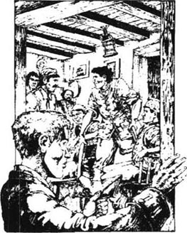
“我不喜欢这次航行，”他说，“我不喜欢这些人，我也不喜欢大副。”
“也许，先生，您不喜欢这条船？”乡绅不高兴地问道。
“我还不能这么说，先生，我还没驾驶她，”船长回答，“船似乎不错。”
“或许，先生，你对你的雇主不满意？”乡绅说。
“好，好，大家别争论了。”李甫西大夫说。他转向船长说：“你说你不喜欢这次航行，为什么？”
“我秘密受雇于人，先生，”船长说，“这位先生让我去哪儿我就去哪儿。而现在我发现船上任何一个人知道的都比我多。我认为这不公平，你说呢？”
“是不公平，”李甫西大夫说，“我也这么认为。”
“还有，”船长说，“我听说我们要去寻宝——我是听我自己的船员说的。老实说，在情况最好的时候我也不喜欢寻宝航行，我更不喜欢这样遮遮掩掩的。并且，船长应该有权选择自己的船员。”
“是这样，”大夫说，“你不喜欢埃罗吗？”
“不是，先生，”船长斯摩列特说，“他对船员们非常友好。”
“告诉我们你想怎样？”大夫说。
“首先，那些人把火药和武器放在船头，”船长说，“其实，船舱下面有个不错的地方，为什么不放在那里呢？其次，你们带来的四个人，让他们睡在船长室隔壁吧。”
“还有吗？”屈利劳尼先生问。
“还有一件事，先生，”船长说，“现在泄露出去的事情太多了。我把我听到的告诉你们。据说你们有一个岛的地图，上面画着叉叉标出了宝藏的位置；那个岛位于——”他说出了那个岛的准确位置。
“我没告诉过任何人！”乡绅说。
“船员知道了，先生，”船长说，“我不知道地图在谁手里，但我希望保密，即使对我和埃罗也一样。否则我就请求离开这条船。”
“你让我们保守秘密，”大夫说，“你把所有的武器都安置在我们附近。这就是说，你担心船上暴乱？”
“我没这么说，先生，”斯摩列特船长说，“相信有暴乱的船长是不会出海的。”说完他走了。
“屈利劳尼，”大夫说，“我认为你物色到了两个正直的人——船长和约翰·西尔弗。”
“西尔弗，没错，”乡绅说，“至于船长，他根本不像个男人，更不像一个好海员！”
“那么，”大夫说，“咱们走着瞧吧。”
高个儿约翰来的时候我们正忙着搬火药和武器。他跳上船，像只灵巧的猴子，看着我们干活儿。
“这是干什么？”他问。
“是我的命令，”船长冷冷地说，“你可以下去了，船员们该吃晚饭了。”
“是，先生。”厨子说，然后就离开了。
“他是个好人，船长。”大夫说。
“也许是，先生。”船长斯摩列特答道。
7 The apple barrel
7
The apple barrel
We sailed at the first light of day. I was more tired than ever before, but everything was so new and interesting I would not leave the deck.
'Let's have a song!' cried one of the men.
Long John began to sing that song I knew so well:
Fifteen men on the dead man's chest—
And the whole crew joined with him:
Yo-ho-ho and a bottle of rum!
Even at that exciting moment, I remembered the old Admiral Benbow, and I seemed to hear the voice of old Bill, the seaman, singing with them. But soon the sails began to fill with wind, and the land and other ships moved past on each side. The Hispaniola had begun her voyage to Treasure Island.
I am not going to describe the voyage in detail. The ship was indeed a good ship, the crew were good seamen, and the captain knew his business well. But Mr Arrow was even worse than the captain had feared. The men did as they pleased with him, and after a day or two at sea, he began to drink too much. Where he got the drink was a mystery, and if we asked him, he would only laugh. Then one wild, dark night with a rough sea, he disappeared and was seen no more.
'Fallen overboard!' said the captain. 'Gentlemen, we'll do better without him.'
But we were without a first officer. Mr Trelawney had been to sea before and knew enough to be useful, and one of the men, Israel Hands, was a careful and experienced seaman who was able to help with almost anything. He was a great friend of Long John Silver.
All the crew liked and even obeyed Silver, and he was always pleased to see me in the kitchen, which he kept as clean as a new pin. He kept his parrot in cage, in the corner.
'I call him Captain Flint,' he told me, 'after the famous pirate.'
And the parrot used to scream, 'Pieces of eight! Pieces of eight! Pieces of eight!'
The captain and Mr Trelawney still did not like each other, and the squire didn't try to hide it. The captain spoke few words, but agreed that the crew were better than he'd hoped for, and that the ship was a fine one.
The crew seemed happy, which was not really surprising. No ship's company was ever so well looked after, with plenty to eat and drink; and a barrel of apples open for any man to take one.
And it was the apple barrel that saved our lives.
It was the day before we expected to see Treasure Island. The sun had gone down, all my work was done, and I thought I should like an apple. The barrel was nearly empty and I had to climb right inside to get my apple. As I sat there in the dark, the ship moving gently in the water, I almost fell asleep.
Suddenly, the barrel shook as a heavy man sat down and rested his shoulders against it. The man began to speak and it was Silver's voice. Before I had heard a dozen words, I was trembling with fear. I understood from those words that the lives of all honest men on the ship depended on me alone!
'Flint was captain, not me,' said Silver. 'In the same battle that I lost my leg, old Pew lost his sight. But I got two thousand when I sailed with Flint—and it's all safe in the bank at home.'
'But what if you don't live to get home again?' asked another, doubtful voice. I recognized the voice of the youngest seaman aboard.
'Pirates live rough,' agreed Silver. 'They live dangerously and some get caught and die by the law. But they eat and drink the best, and when the voyage is done, it's hundreds of pounds instead of hundreds of pence in their pockets. Once I'm back from this trip, I'll live like a gentleman. But I began life like you—a clever young seaman without a penny in my pocket!'
'I didn't like this job until this talk with you, John,' said the young seaman, 'but I'm with you now.
They shook hands so hard that the barrel shook as well, with me inside it. By this time, I understood that Silver had just turned an honest seaman into a pirate. Perhaps every man in the crew was now a pirate!
Silver gave a quiet call and a third man came and sat down with them. 'Dick's with us,' said Silver.
'I knew Dick was all right,' replied the voice of Israel Hands. 'But how long are we going to wait? I've had enough of Captain Smollett.'
'Until the last moment!' cried Silver. 'Captain Smollett's a first-class seaman, and the squire and doctor have the map. Let them find the treasure and bring it aboard—then we'll see. I'd rather have Captain Smollett sail us half-way home before I moved, but I know the rest of the men won't wait that long. So I'll finish with the captain and the others at the island.'
'But what do we do with them?' asked Dick.
'They must die,' said Silver. 'We don't want them coming home later, to tell what happened. Now, Dick, get me an apple. I'm thirsty.'
You can imagine my horror! I heard Dick begin to rise, but Hands said, 'Oh, let's have some rum, John.'
Silver sent Dick to fetch the rum, then Israel said something to the cook in a low voice, and I heard only a word or two. But they were important words: 'Not another man will join.' So there were still some honest men on board.
I looked up and saw the moon had risen. At the same time, the voice of one of the crew shouted: 'Land!'
There was the sound of many feet running across the deck. I quickly got out of the barrel and was in time to join Hunter and Dr Livesey and the rest, at the side of the ship.
Away to the south-west, we saw two hills. Rising behind one of them was a third hill, even higher, and with its top still hidden in fog. Captain Smollett gave orders, and the Hispaniola turned so that the ship would sail just clear of the island on the east.
'Has anyone seen that land before?' he said.
'I have, sir,' said Silver. 'I was cook on a ship that stopped here once. There's a safe place to anchor in the south, behind a little island called Skeleton Island. Those three hills we can see are on the big island. They're in a row running south—the biggest is called Spyglass.'
'Thank you,' said Captain Smollett. 'Later on, I'll ask you to give us some help. You may go now.'
Dr Livesey called me, meaning to ask me to fetch his pipe, but I spoke quickly. 'Doctor, get the captain and squire down to the cabin. I have some terrible news.'
He went across and spoke to the other two, then the three of them went below. Soon after, a message came that I was wanted in the cabin.
I told them in as few words as possible what Silver and the others had said, and they listened without speaking. It was a warm night and I saw the moon shining on the sea as I told my story.
'Captain,' said the squire when I'd finished, 'you were right, and I was wrong.'
'But I've never known a crew planning to mutiny that did not show some sign of it before,' said the captain.
'That's Silver,' said the doctor. 'He's a very clever man.'
'He'd look very clever with a rope around his neck, sir!' replied the captain. 'But we must make a plan. We can't go back, or they would know at once. But we have some time before the treasure is found, and there are some honest men among the crew. Your men, squire?'
'As honest as myself,' agreed Mr Trelawney.
'And ourselves,' said the captain. 'That's seven, with young Hawkins here. Now, what other honest men are there?'
'Probably the men Trelawney chose before he met Silver,' said the doctor.
'No,' said the squire. 'Hands was one of them.'
'Well, gentlemen,' said the captain. 'We must wait and watch carefully, until we know our men.'
describe [disˈkraib] v. 描写，描述；形容；叙述，记叙 to give a picture (of someone or something) in words: Can you ～ the accident in detail to me? 你能向我叙述事故的详细情形吗？
mystery [ˈmɪstəri] n. 神秘的事物，不可思议的事物，谜 something which can not be explained or understood: The identity of the thief is still a ～. 贼究竟是谁还是个谜。mysterious (a.)
plenty n. a state of having a large supply of, esp. of the needs of life. 丰富；充足；众多；大量；resources in plenty 丰富的资源。～ of time 充足的时间。
fall asleep to go into a state of sleep. 入睡；静止不动；变得不活跃：the falling asleep of the critical faculty 判断能力的麻痹状态。
tremble v. to shake uncontrollably as from fear, cold, excitement, etc.. 颤抖，抖动，战栗，哆嗦：His voice ～d with emotion. 他的声音因激动而颤抖。
imagine v. to form (a picture or idea) in mind. 想像：Can you ～ these fat men climbing the mountain? 你能想像这些胖子攀登这座高山的情景吗？
even ad. (used just before the surprising part of a statement, to add to its strength) which is more than might be expected. （加强语气）甚至（…也），连（…都）：Even John doesn't go out in the summer. 就连约翰夏天也不出去。
fetch v. to go and get and bring back. （去）拿来：shall I ～ your hat for you?要我替你把帽子拿来吗？～ and carry 做杂务，当听差。
terrible a. very severe indeed. 可怕的，可怖的，骇人的：A ～ sight met my eyes. 我看见了一幅可怕的景象。terribly (ad.)
shine v. to give off light; look bright. 照耀；发光，发亮：The rain has stopped and the sun is shining. 雨已停，阳光照耀。
until prep. up to (the time that). 直到…为止：We won't start until Bob comes. 鲍勃来之后我们才能开始。not until 直到…才。
苹果桶
7 苹果桶
晨曦微露，我们就起航了。我比以前任何时候都累，可是航行对我来说又新鲜又有趣，我一直不愿离开甲板。

“我们唱个歌吧！”一个人建议。
于是高个儿约翰唱起了我熟悉的老调：
十五个人趴在死人身上——
所有船员都跟着他唱起来：
唷呵呵，快来尝一杯朗姆酒！
即使在这么激动的时刻，我还能记起本葆将军酒店，我好像听见老船长比尔也在和他们一起唱。不一会儿，帆就鼓满了风，陆地和其他的船在两旁迅速地向后退去。伊斯帕尼奥拉号向金银岛的航行开始了。
我不想详尽地描述这次航行。船是条好船，船员也不错，船长也熟稔他的行当。但是埃罗却比船长所担心的更坏。他我行我素，过了一两天以后便开始酗酒。他从哪儿弄来的酒始终是个谜，我们问他时，他只是笑。在一个月黑风高的夜里，他终于失踪了，再也没人见过他。
“他准是掉到海里了！”船长说，“没有他我们会做得更好。”
但我们毕竟少了一名大副。屈利劳尼先生曾当过水手，他的海上知识足够用的。伊斯莱尔·汉兹，船上的一名水手，谨慎且经验丰富，是个几乎任何事都可以托付给他的人。他和高个儿约翰·西尔弗是至交。
所有的船员都喜欢西尔弗，甚至很听他的话，他总是很高兴我在厨房里，他总是把厨房收拾得干干净净。在一个角落里，他在一个笼子里养着一只鹦鹉。
“我管它叫弗林特船长，”他说，“以那个出名的海盗来命名。”
那只鹦鹉常常叫道：“八个里亚尔！八个里亚尔！八个里亚尔！”
船长和屈利劳尼先生还是互不喜欢，乡绅也毫不掩饰这一点。船长很少说话，但他认为船员比他希望的还好，船也是条好船。
船员们似乎都很高兴。这也不足为怪，因为没有一艘船有这样的待遇。船员们有足够的吃喝，还有一桶苹果，任何人都可以吃。
而正是这苹果桶救了我们的命。
那天是我们预计到达金银岛的前一天。太阳已经落山，我也忙完了手中的活计，准备吃个苹果。苹果桶快空了，我只好钻进去拿苹果。我在黑暗中坐着，船在水上轻轻颠晃，我都快睡着了。
忽然，苹果桶剧烈地晃了一下，一个人坐下来，倚在苹果桶上。那个人开始讲话，我听出是西尔弗的声音。只听他说几句话，我就吓得直发抖。那些话使我知道船上所有好人的生命都系于我一身。
“那时弗林特是船长，不是我，”西尔弗说，“在那一仗中我失去了这条腿，老皮尤瞎了眼。我和弗林特出海时得到2000英镑——现在存在家乡的银行里。”
“如果你不能活着回去怎么办？”另一个人怀疑地问。我听出那是船上一个最年轻的船员。
“海盗们都很粗暴，”西尔弗说，“海盗们时刻生活在危险之中，其中有些人被抓住后送上绞架。但海盗们吃得好喝得好，一趟出海归来，就会有几百英镑装入腰包，而不是几百便士。我这次旅行回来后，就像个绅士一样生活。我开始时也和你一样——身无分文。”
“在此谈话之前我并不喜欢这个工作，约翰，”年轻人说，“但现在我和你一起干了。”
他们俩热烈握手，苹果桶剧烈地晃起来，当时我就在里面。这时我意识到西尔弗已经把一个正直的人变成了海盗。也许船上每个人都是海盗！
西尔弗轻轻叫了一声，又一个人过来坐在他旁边。“迪克也是我们的人。”西尔弗说。
“我知道迪克是我们的人，”伊斯莱尔·汉兹说，“还要等多久我们才能下手？我已经无法忍受斯摩列特船长了。”
“要等到最后一刻！”西尔弗喊道，“斯摩列特船长是个一流的水手，而乡绅和大夫那儿有藏宝图。让他们去找到宝藏并运上船——我们再作决定。依我看我们应该让斯摩列特船长送我们半程再干掉他，但我知道其余的人肯定等不了这么久。那么我们就在岛上干掉那些人。”
“我们对他们怎么办呢？”迪克问。
“他们必须得死，”西尔弗说，“我们不能让他们有朝一日回去把真相讲出来。迪克，给我拿个苹果来，我口渴得很。”
你可以想像我有多恐惧！我听见迪克已经站起来，可是汉兹说：“噢，约翰，咱们喝点儿朗姆酒吧。”
西尔弗让迪克去取酒，伊斯莱尔和厨子低语了几句，我只听见几个字，但很重要：“有个人不肯参加我们的行列。”看来还有和我们站在一起的人。
我抬头看去，月亮已经升起来了。正在这时有个人喊道：“陆地！”
甲板上顿时响起了脚步声。我也乘机跳出苹果桶，正好遇上亨特和李甫西大夫等人，便和他们一起冲上船边。
我们朝西南方向望去，可以看见两座小山。其中一座小山后面还有一座高一点的小山，山的顶部还笼罩在雾中。斯摩列特船长下了命令，伊斯帕尼奥拉号掉头从东面靠近小岛。
“有人见过这小岛吗？”他问。
“我见过，先生，”西尔弗说，“我曾在一艘船上做厨子，那船在这儿停过。岛南面有个安全的地方可以下锚，就在那个叫骷髅岛的小岛后面。我们能看见的三座小山在大岛上，它们向南排成一列，那最大的山叫望远镜山。
“谢谢你，”斯摩列特船长说，“以后我还要请你帮忙。你现在可以走了。”
李甫西大夫叫我去给他拿烟斗来，我急促地说：“叫船长和乡绅都到下面船舱去，我有可怕的消息告诉你们。”
他去找那两个人了，然后他们三个人一起下去。不久，有人传话来让我到船舱去。
我尽可能简短地给他们讲了西尔弗和其他人都说了些什么，大家默默地听着。那是一个暖和的夜晚，月光洒满了海面。
“船长，”我讲完后乡绅说，“你是对的，我错了。”
“我还从没遇到过海员酝酿暴乱而不露声色的。”船长说。
“这就是西尔弗，”大夫说，“他是个精明人。”
“他精明得快上绞架啦，先生！”船长答道，“但我们必须想个对策。我们不能返航，那样他们马上就知道了。我们在找到宝藏之前还有时间，船员中还有几个正直的人。你的人如何，乡绅？
“和我一样可靠。”乡绅说。
“加上我们这些人，”船长说，“一共七个人，包括霍金斯在内。还有其他可靠的人吗？”
“屈利劳尼先生在遇到西尔弗之前选的人也许可靠。”大夫说。
“不，”乡绅说，“汉兹就是他们的人。”
“好吧，先生们，”船长说，“我们必须坐观事态发展，等待摸清敌我之间的情况后再说。”
8 Treasure Island
8
Treasure Island
Next morning, there was no wind and we were half a mile from the eastern coast of the island. Although the sun shone bright and hot, I hated the thought of Treasure Island, afraid of what would happen there.
Because there was no wind, the small boats pulled the ship three or four miles round the island, to a safe place to drop the anchor. I went in one of them.
It was hard work pulling the ship, and the men argued. Afterwards, they sat around the deck, and the smallest order was received with an angry look.
'If I give another order,' said the captain, 'the whole crew will mutiny. Only one man can help us.'
'And who is that?' asked the squire.
'Silver,' replied the captain. 'He wants to keep things calm as much as we do; he wants the men to wait. Let's allow them an afternoon on shore. If they all go, we'll have the ship. If some go, Silver will bring them back as gentle as sheep.'
Guns were given to all the honest men. Hunter, Joyce, and Redruth were told what was happening, and were less surprised than we expected them to be. Then the captain went on deck to talk to the crew.
'Men, you've had a hot, tiring day,' he said. 'The boats are still in the water. Any man who wants to can go ashore for the afternoon. You'll hear a gun half an hour before the sun goes down to call you back.'
They all became happier at once. I think they thought they would find the treasure lying around on the beach! After some talk, six men stayed on board, and the others, with Silver, got into the small boats.
I then had the first of the mad ideas that helped to save our lives. If six men were left, we could not take control of the ship; and because only six were left, the captain's men did not need my help. So I quickly went over the ship's side and into the nearest boat.
No one took much notice of me, only one man saying, 'Is that you, Jim?' But Silver called from the other boat, wanting to know if it was me. Then I began to worry if I had done the right thing.
The crews rowed to the beach and our boat arrived first. I ran towards the trees. Silver and the rest were a hundred metres behind, and I heard him shouting, 'Jim, Jim!' But I took no notice, pushing through trees and bushes, and ran until I could run no longer.
I was pleased to lose Long John and began to enjoy looking around this strange island. I crossed wet ground and came to a long, open piece of sand, then went on to a place where the trees had branches that were thick and close to the sand.
Just then I heard distant voices, Silver's among them, and hid behind a tree. Through the leaves, I saw Long John Silver and another of the crew talking together.
'I'm warning you because I'm your friend, Tom,' Silver was saying.
'Silver,' said Tom. 'You're old and you're honest, or so men say; and you've money, too, which lots of poor seamen haven't. And you're brave. Why let yourself be led away with that kind of scoundrel? I'd rather die than—'
Suddenly, there was a noise of distant shouting, then a long horrible scream. I had found one honest man here, and that terrible, distant scream told me of another.
'John!' said Tom. 'What was that?'
'That?' replied Silver. His eyes shone like pieces of broken glass in the sun. 'That'll be Alan.'
'Alan!' cried poor Tom. 'An honest and true seaman! John Silver, you've been a friend of mine, but for no longer. You've killed Alan, have you? Then kill me, too, if you can!'
The brave man turned his back on Silver and began to walk back to the beach. With a shout, Silver threw his crutch through the air. It hit poor Tom between the shoulders, and he fell to the ground with a cry. Silver, as quick as a monkey, was on top of him in a moment. Twice he dug his knife into that poor body.
As I watched, the whole world seemed to swim away before me in a mist—Silver, the birds above, the tall Spyglass hill. When I was myself again, Silver was standing with his crutch under his arm, cleaning the blood from his knife with some grass.
As silently as I could, I began to move away, and as soon as I was clear of the trees, began to run as I had never run before.
although conj. in spite of the fact that; though. 尽管，虽然：They are generous although they are poor. 他们很慷慨，尽管他们不富裕。注意：although不能和but连用。
mad a. showing that one suffers from a disease of the brain or disorder of the mind. 疯的，神经错乱的，精神失常的：She went mad after the death of her son. 她儿子死后她就疯了。比较级：madder；最高级：maddest.
worry v. to make anxious or uncomfortable. 担心，发愁：I shouldn't ～ too much about it if I were you. 我是你的话，我不会为那事过分担心。
row v. to move (a boat) through the water with oars. 划（船）：You must learn to ～ a boat. 你必须学会划船。
distant a. separate in space or time; far off; away. 在远处的，远离的；久远的：The stars are ～ from the earth. 这些星离地球很远。
dig v. to break up and move (earth). 掘地；掘；挖：The dog has been digging in that corner for an hour. 那只狗在那墙角挖了一小时了。过去式及过去分词：dug;现在分词：digging.
金银岛
8 金银岛
第二天早晨，一丝风都没有，我们距离岛的东岸还有半英里。尽管阳光灿烂而温暖，我却憎恨这个金银岛，害怕可能发生的一切。
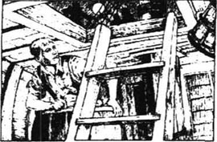
因为没有风，我们用小船拖着大船在岛的周围绕了三四英里，到一个安全的地方下锚。我上了其中一只小船。
用小船拖大船是件苦差事，大家都在抱怨。然后，他们就坐在甲板上，哪怕一个小小的命令也会遭到白眼。
“如果我再下命令，”船长说，“所有的船员都会暴乱，只有一个人能帮我们。”
“谁？”乡绅问。
“西尔弗，”船长回答，“他也和我们一样想稳住局面，他希望他的人不要轻易动手。我建议下午让他们上岸去。如果他们都去，我们就夺回船。如果几个人去，西尔弗带他们回来的时候，他们会像绵羊一样听话。”
枪已分发给所有可靠的人。亨特、乔伊斯、雷德拉斯也知道了事情的真相，他们并不像我们想像的那么惊讶。船长走上甲板向全体船员宣布：
“朋友们，”他说，“大家过了又累又热的一天，小船还在水里。谁要是愿意，下午都可以上岸去。在日落前半小时我放炮通知大家。”
他们一下子都笑逐颜开。我想，他们以为一上岸就能在沙滩上找到他们要的宝藏。他们商量了一下，六名水手留在船上，其他人，包括西尔弗，都登上小船上了岸。
我忽然想到第一个近乎疯狂的想法——正是这主意后来救了我们的命。既然留下六个人，我们就无法控制船；但又因为只留下六个人，船长的人也不是非要我帮忙不可。我迅速逃离大船跳上一只最近处的小船。
没人注意到我，只有一个人问了一句：“是你吗，吉姆？”西尔弗在另一只船上喊了一句，以便确定是不是我。我又开始担心是不是应该这么做。
小船都争先恐后向岸边驶去，我们的小船第一个到达。我上岸后就向树林里跑去，西尔弗他们还在百米之后，我听见他在喊：“吉姆，吉姆！”但我没有理睬他，在树和灌木丛间飞跑，一直跑到不能再跑为止。
我很高兴逃离高个儿约翰，开始巡视这个奇怪的小岛。我穿过一片沼泽地带，来到一片长而开阔的沙地，然后到了沙地附近一片树高叶茂的地方。
我忽然听见远处有说话的声音，西尔弗也在其中，他站在一棵树后面。透过树叶，我看见高个儿约翰正和几个船员说话。
“因为我和你是朋友，我才警告你，汤姆。”西尔弗说。
“西尔弗，”汤姆说，“你年纪大了，又很老实，名声不坏——至少人们是这么说的；又很有钱，不像那些穷海员。你很勇敢，为什么不和那些蠢东西断绝来往呢？要是我，宁可死也不——”
忽然，远处传来一阵叫喊声，然后是一声长长的惨叫。我在这儿找到了一个诚实的人，而那声惨叫让我知道还有另外一个人。
“约翰！”汤姆喊道，“那是什么声音？”
“哪个？”西尔弗答道，他的眼睛像阳光下的碎玻璃一样发亮，“那是艾伦的声音。”
“艾伦！”汤姆嚷起来，“那么忠厚老实的人！约翰·西尔弗，你曾经是我的朋友，但今后不是了。你杀了艾伦，对吗？你也杀了我吧！如果你做得到。”
这个勇敢的人转身背对着西尔弗向岸边走去。西尔弗大叫一声，把拐杖扔出去。拐杖击中了汤姆背脊中央，汤姆大叫一声倒在地上。西尔弗像猴子一样灵巧地蹿到汤姆身边，在他身上狠狠捅了两刀。
看到这一切，整个世界像一团雾飘离而去——西尔弗、头上的鸟儿、高高的望远镜山。我恢复清醒以后，西尔弗已经拄着拐杖站起来了，正用草擦拭刀上的血。
我尽可能不出声，一点一点挪动脚步。等离开那片树林后，我撒腿就跑，比以前任何时候跑得都快。
9 The man of the island
9
The man of the island
But almost immediately I ran into a new danger. As I ran, I heard some small stones falling from the side of a steep hill. I stopped to look round, and saw a figure jump quickly behind a tree. Frightened, I turned back towards the boats, but the figure appeared again and moved with the speed of an animal. But it was a man, I knew that now.
I remembered I had a pistol if I needed it, and turned back towards this man of the island. He was hiding behind another tree but stepped out to meet me.
'Who are you?' I asked, staring at him.
'Ben Gunn,' he answered, and his voice sounded rough and strange. His skin was burnt nearly black by the sun and his clothes were made from pieces of a ship's sail. 'Poor Ben Gunn,' he went on. 'Alone for three years.'
'Were you shipwrecked?' I asked.
'No, my friend,' he said. 'Marooned.'
I had heard the word before, and knew it meant a cruel punishment often used by pirates—leaving a man alone on some distant, empty island.
'Marooned three years,' he continued, 'living on wild goats and fish. But I'm desperate for real English food. You don't have a piece of cheese, do you? Many nights I've dreamed of cheese.'
'If I can get on board ship again,' I said, 'you can have as much cheese as you want.'
'Who's going to prevent you?' he said. 'And tell me your name.'
'Jim,' I told him.
'Well, Jim,' he said, looking around and lowering his voice to a whisper, 'I'm rich.' I was now sure the poor man was crazy, but he repeated his words. 'Rich, I say! Now, Jim, that isn't Flint's ship, is it?'
I began to think that I had found a friend, and I answered him at once. 'It's not Flint's ship. Flint is dead, but there are some of Flint's men aboard, and that's bad news for us.'
'A man with one leg?' he asked, fear in his voice.
'Silver?' I asked.
'Yes, Silver,' he said, 'that was his name.'
'He's the cook, and their leader, too.' And I told him the whole story of our voyage, and the danger we were now in.
'You're in trouble, Jim,' he said when I'd finished. 'Well, Ben Gunn will help you. Will your squire be generous if I do, do you think? I don't want him to give me a job, but will he give me one thousand pounds out of money that's really mine?'
'I'm sure he will,' I said.
'And take me home on your ship?'
'If we can escape from the others,' I told him, 'we'll need your help to get the ship home.'
He seemed happy with this. 'I was in Flint's ship when he and six seamen hid the treasure,' he said. 'They were on shore nearly a week, then Flint came back alone. Not a man on board could guess how he had killed the others. Then I was in another ship, three years ago, and we saw this island. "Boys," I said, "let's go ashore and find Flint's treasure." Twelve days we searched, and the men got angrier with me every day. Then they went back to the ship. "Ben Gunn," they said, "you can stay here and find Flint's money. Here's a gun, a spade and an axe." Well, Jim, I've been here for three years, and no real food from that day to this. But I've found things to do, oh yes!' Here he closed one eye and smiled at me. 'Now go to your squire and tell him Ben Gunn is a good man.'
'I will,' I said, 'but how will I get on board?'
'There's my boat that I made with my two hands,' he said. 'I keep her under the white rock. We might try that after dark.'
Although there was another hour before the sun went down, we suddenly heard the sound of the ship's gun.
'They've begun to fight!' I cried. 'Follow me.'
rough a. (of sounds) not gentle or tuneful. 粗野的；粗俗的：a ～ voice 粗野的话语。take the ～ with the smooth 既能享乐也能吃苦。
cruel a. like to cause pain or suffering; unkind. 残忍的，残酷的：Tigers are ～ by nature. 老虎生性残暴。同义词：inhuman, fierce;反义词：pitiful。
desperate a. (of a person) ready for any wild act because of loss of hope. 绝望的，没希望的；危急的：The state of the country is ～. 那个国家的形势非常危急。desperately (ad.).
cheese n. (any of many kinds of ) soft or firm solid food made from pressed and sometimes rippened milk solids. 乳酪，干酪：make the ～ more binding 〈美俚〉使事情更加复杂困难。Say ～！〈口〉笑一笑！（常在拍照时说。）
lower vt. to make or become smaller in amount, price, degree, strength, etc.. 放下，降下，放低：lower the aim of a gun 把枪瞄得低一点。
escape v. (of a person) to reach freedom. 逃出；逃走；逃跑：He escaped from prison. 他从监狱跑了。
hide [haid] vt. 把……藏起来，隐藏 to put or keep out of sight; make or keep secret: You are hiding some important facts. 你隐瞒了一些重要事实。过去式：hid. 过去分词：hidden. hide-and-seek 捉迷藏游戏。
岛中人
9 岛中人
几乎是在同时，我又碰到了新的危险。在我跑的时候，我听见许多石块从陡峭的山坡上纷纷落下。我停下脚步环视，看见一个身影迅捷地跳到一棵树后。我很害怕，转身向船跑去，那个身影又出现了，跑得和野兽一样快。这回我看清楚了，那是一个人。
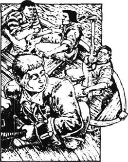
我忽然想起我带着枪，于是转过身去面对那个岛中人。他正躲在一棵树后面，这时他走出来面对着我。
“你是什么人？”我盯着他问。
“本·葛恩。”他说，声音沙哑而怪异。他的皮肤被晒黑了，衣服是船帆的破布条。“我是可怜的本·葛恩，”他继续说，“我一个人在这儿三年了。”
“你的船遇难了吗？”我问道。
“不是，我的朋友，”他说，“是流放。”
我听说过这个词，知道是海盗们使用的一种残酷的惩罚手段——受罚者被放逐到一个遥远的荒岛上。
“三年前我被放逐到这里，”他继续说，“从此一直靠吃野山羊和生鱼过活。但我多么想吃真正的英国饭啊！你是不是带着干酪什么的？我不知多少个夜晚都梦见过干酪。”
“我要是能回到船上去，”我说，“你要多少干酪都可以。”
“那么谁不让你回去呢？”他说，“还有，你叫什么名字？”
“吉姆。”我告诉他。
“那好，吉姆，”他说，他四处张望了一下，把嗓门压低了，“我发财啦！”我确信他一定是疯了，可他重复他的话：“我发财啦！吉姆，那是不是弗林特的船？”
我意识到我找到了一位朋友，我马上告诉他：“那不是弗林特的船，弗林特已经死了，但船上有几个是弗林特的同伙，这是个不幸的消息。”
“他们中有个一条腿的人吗？”他问，声音中有恐惧。
“西尔弗吧？”我问。
“对，这就是他的名字。”
“他是船上的厨子，也是那帮人的头头。”我把这次航行的来龙去脉都讲给他听，也告诉他我们的危险处境。
“你们很危险，吉姆，”他说，“不过，本·葛恩会帮你们的。如果我帮你们脱险，那位乡绅先生会不会比较慷慨？我的意思不是让他给我一个工作。能不能让他从本来就是我的钱中拿出1000英镑来作为酬劳？”
“我相信他一定愿意。”我说。
“而且让我坐你们的船回去？”
“如果我们能摆脱他们的话，”我告诉他，“我们也需要你把船开回去。”
他似乎对我的承诺很满意。“弗林特和六个船员藏宝的时候我正在船上，”他说，“他们上岸有一星期左右，结果只有弗林特一个人回来了。船上的人谁也不知道他怎样干掉了其余的人。三年前，我在另一条船上，我们看见了这个岛。‘伙计们，’我说，‘这里有弗林特的宝藏，我们上岸去找吧。’我们找了12天，大家一天比一天恨我。直到有一天，他们都回到船上。‘本·葛恩，’他们说，‘给你一枝枪，一把铲子和一把斧头。你留在这儿找弗林特的宝藏吧。’就这样，吉姆，我在这里待了三年，我没吃过一顿正经的饭。但我找到了我可做的事！”说到这儿，他闭上一只眼睛，冲我笑，“你去告诉乡绅，本·葛恩是个好人。”
“我会的，”我说，“但我们怎么回船上去？”
“我有一只小船，是我这两只手做的，”他说，“我把它藏在白色岩石下面。天黑以后咱们去试试。”
尽管离日落还有一个小时，我们忽然听见船上传来一声枪响。
“他们开火了！”我惊叫起来，“跟我来。”
10 Inside the stockade
10
Inside the stockade
We followed the noise of the fighting and came to a hill. There stood a strong wooden house, big enough for forty people, and with holes for guns on every side. All around the house was a wide open piece of land; and around that was a fence, two metres high, with no doors or openings, and too strong to pull down easily.
As soon as Ben Gunn saw the English flag flying over the house, he said, 'There are your friends.'
'More likely to be the pirates,' I answered.
'Silver would put up the pirate's flag, the Jolly Roger,' said Ben. 'No, there's been a fight, and your friends have won. They're inside the stockade that Flint made years ago.'
'Then I must hurry and join them,' I said.
He wouldn't come with me. 'I won't come until you've seen your gentleman and got his promise. You know where to find me, Jim. And if the pirates sleep on shore tonight, one of them might have an unpleasant surprise!'
The ship's gun BOOMED! and the shot fell only a hundred metres away. Ben Gunn and I each ran our different ways. The firing continued for another hour, and I moved quietly through the trees to the shore. There I saw the Hispaniola in the bay—but the Jolly Roger was flying over her!
On the beach, the pirates were breaking up the captain's little boat with axes. When the ship's gun stopped firing, I went back to the stockade.
'Doctor!' I shouted. 'Squire! Captain! Hallo, Hunter, is that you?'
Dr Livesey came out of the house in time to see me climbing into the stockade, and my friends welcomed me happily. They gave me supper—although they were worried because there was little food left. As I ate, Dr Livesey told me their story.
'We heard you had gone ashore on one of the boats, Jim,' he said. 'We never doubted your honesty, but we were afraid you wouldn't be safe. Hunter and I came ashore to see what was happening, and found the stockade. It seemed a good place to defend ourselves against Silver and his men, because we were sure they would kill us when they returned to the ship. Here, all we needed was enough food, and people to watch for enemies. You see, we know that if the Hispaniola does not return to Bristol by the end of August, a rescue ship will be sent to look for us.
'So we made a plan to get ourselves off the ship,' Dr Livesey went on. 'Hunter, Redruth, and Joyce helped us. Hunter brought the captain's little boat round under the cabin window, and Joyce and I put guns and food and my medicine chest in it. Redruth took four guns and went on deck with Trelawney and the captain. They were able to surprise Israel Hands and the other men, and they managed to persuade one man, Abraham Gray, to join us again.'
'So you left five pirates on the ship?' I said.
'Yes,' said Dr Livesey. 'And we dropped the rest of the weapons over the side into the sea before leaving the ship. But we forgot the ship's gun. We were half-way to the island when the pirates fired it at us.'
'I heard it,' I told him.
'Trelawney tried to shoot Hands but killed another man instead,' said Dr Livesey. 'The pirates on the island heard the gun and ran out of the trees towards their boats. Then our small boat began to go down and we found ourselves in the water. Most of the food was lost and we had only two dry guns out of five. Somehow we got ashore and into the stockade, but we knew there was going to be a fight.'
'But you won,' I said.
'Yes,' agreed Dr Livesey. 'We killed another of their men. badly wounded another, but lost one of our own poor Tom Redruth.'
After the doctor had finished, I told them my story, and about Ben Gunn. Then we began to talk about what to do next. Our best plan was to kill the pirates one by one until the rest ran off or sailed away in the ship.
I was very tired, and fell asleep as the three men talked. It was the sound of voices shouting that woke me the next morning.
'A white flag!' I heard someone say. 'It's Silver!'
I ran to a hole in the wall and looked through. Two men were outside the stockade, one waving a white cloth. The other man was Silver. It was a very cold morning, the sky bright and without a cloud, but Silver and his man were standing in a low mist.
'What do you want?' shouted Captain Smollett.
The man beside Silver replied, 'Cap'n Silver, sir, to talk about peace.'
'Cap'n Silver?' said the captain. 'Who is he?'
Long John answered. 'Me, sir. The men chose me to be captain after you deserted the ship. We're willing to make peace if we can all agree. All I ask is your promise to allow me safely out of the stockade.'
'I don't want to talk to you,' said Captain Smollett, 'but if you want to talk to me, you may come.'
Silver came towards the stockade, threw his crutch over the fence, then climbed after it. With great difficulty, he walked up the hill of soft sand.
'Aren't you going to let me inside?' said Long John. 'It's a cold morning to be outside.'
'If you were an honest man, Silver,' said the captain, 'you could be in your kitchen. You're either my ship's cook, or Cap'n Silver, a dirty pirate! Now, if you've anything to say, say it!'
'Well now, Cap'n Smollett,' said Silver, sitting down in the sand, 'you were very clever, last night. One of you is very quick with a knife, isn't he? Some of my men were frightened, and perhaps I was too. Perhaps that's why I'm here now. But you won't do it again, by thunder! We'll drink less rum and watch more carefully. I was asleep, but I almost caught you. The man you knifed wasn't dead when I reached him.'
'Well?' said Captain Smollett, pretending to understand. But I guessed what Silver was talking about. I remembered Ben Gunn's last words to me. Perhaps he had visited the pirates during the night, when they were lying around their fire, full of rum.
'We want that treasure, and we'll have it!' said Silver. 'Now, you have a map. Give it to us, and stop killing poor seamen when they're asleep, and we'll let you choose what to do. Either come aboard ship with us when we have the treasure, and we'll take you to a safe place; or stay here on the island.'
'Is that all?' asked Captain Smollett.
'It's my last word, by thunder!' said Silver. 'Refuse, and you'll all die.'
'Now you'll hear me,' said the captain. 'If you come up one by one, without weapons, I'll take you home to a fair trial in England. You can't find the treasure without the map. None of you knows how to sail the ship home. And you can't fight us—Gray got away from five of you. If you say no, the next time I see you I'll put a bullet in your back. Now, get out of here quickly.'
Silver's eyes were filled with anger. 'Somebody help me up!' he shouted, but none of us moved. Swearing angrily, he pulled himself across the sand to the fence. There, he was able to lift himself on to his crutch again and then climb out of the stockade.
'Before the hour is over,' shouted Silver, 'I'll break your old house like a rum bottle! And those that die will be the lucky ones!'
As soon as Silver disappeared, we got ready for a battle, placing ourselves around the sides of the stockade. The captain went round to check our places and our guns, and to see that everything was ready.
A minute later, Joyce fired his pistol and the battle had begun. Shots came from every side of the stockade, hitting the wooden house, but the bullets did not get through the thick walls. Then there was silence and the smoke slowly cleared away.
Suddenly, guns were fired again, and a group of pirates ran from the woods and on to the stockade. They climbed over the fence like monkeys while the squire and Gray fired at them. In a few seconds, two fell dead, one was running back into the trees, and four were inside the stockade.
'Fight them in the open!' cried the captain.
I took a sword and ran out into the sun. More pirates were starting to climb into the stockade. One man, wearing a red cap and with a knife in his mouth, was already on top of the fence.
But in that moment, the fight was over and we had won. Gray cut down one man with his sword. Another was shot as he fired into the house, and now lay wounded with his smoking pistol in his hand. The doctor had cut down a third. The men on the fence had disappeared back into the trees. And of the four who had climbed into the stockade, only one was not wounded, and he was climbing out again with the fear of death in him.
unpleasant a. causing dislike; not enjoyable. 使人不愉快的；不讨人喜欢的；不合意的：The only work available is ～. 唯一能找到的工作很不合意。～ly (ad.)
rescue v. to save (from harm or danger); set free. 援救；营救；挽救：～ sb. from danger 营救某人脱离危险。同义词：save.
badly ad. very much. 严重地；厉害地：My arm ached ～. 我手臂痛得厉害。同义词：seriously.
wave v. to move (something in one's hand) as a signal, esp. in greeting. 使波动；使摇晃：She ～d towards the door. 她朝着门口挥手。
mist n. (a period or area of) cloudlike bodies made up of very small drops of water floating in the air, nearly reaching to the ground; thin fog. 薄雾：The hills were shrouded in ～. 群山被蒙上薄雾。
desert v. to leave at a difficult time or leave in a difficult position. 抛弃；离弃；遗弃：They ～ed the farm for the city. 他们离开农场，迁往城市。
pretend v. to give an appearance of (something that is not true), with the intension of deceiving. 伪称；假装：He ～ed sleep when his mother called him. 他母亲叫他时，他假装睡觉。
trial n. (an example of) the act of hearing and judging a person, case, or point of law in court. 讯问，审讯；审判：审理：He would be a witness at the ～. 他将在审讯时出庭作证。
none pron. not any; no amount or part. 没有人，没有任何东西：None of the telephones are working. 没有一部电话能用。none the less 仍然，依然。For all his years, he is none the less vigorous and active. 他虽年老，但仍然生气勃勃，精力旺盛。
shoot vt. to fire (a weapon). 开（枪）；开（炮）：He shot at a bird, but missed it. 他向一只鸟开枪，但没打中。过去式：shot. 过去分词：shot. shoot straight 言行正直。
在寨子里
10 在寨子里
我们循着枪声来到一座小山前。那儿有一座坚固的木头房子，可以容得下40人，每一面墙都有射击孔。房子四周是一片开阔地，还有一圈围栏，两米高，没有出入口，很坚固而且不易拉倒。
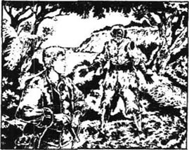
本·葛恩一看见木屋上飘着的英国旗就对我说：“你的朋友在那里。”
“更有可能是那帮海盗。”我说。
“西尔弗一定会挂他们海盗的骷髅旗，”本·葛恩说，“刚才他们打了一仗，你的朋友获胜了。他们正在弗林特几年前建的寨子里。”
“那我得赶快去和我的朋友们会合。”我说。
他不愿和我一起去，“除非你见到了你们那位绅士，得到了他的保证，否则我不会去见他们。吉姆，你知道在哪儿能找到我。要是那帮海盗在岸上过夜，他们中就会有人遭厄运！”
从船上又传来一声炮响，炮弹就落在一百多米以外的地方。我们俩朝着不同方向拔腿就跑。枪炮声持续了一个小时，我悄悄来到岸边的树丛中。我看见伊斯帕尼奥拉号停在海湾里——船上挂着骷髅旗！
在岸上，那帮海盗正用斧子劈船长的小船。炮声停止后，我回到寨子里。
“大夫！”我喊道，“乡绅！船长！你好，亨特！是你吗？”
李甫西大夫立刻从木屋出来，我正翻越围栏，朋友们都高兴地迎接我回来，他们让我吃了晚饭——尽管饭菜剩下的不多了。我吃饭的时候，李甫西大夫给我讲了他们的历险。
“吉姆，我们听说你跟着一条船上了岸，”他说，“我们从未怀疑你的忠实，但我们为你的安全担心。我和亨特上岸想看看发生了什么，却发现了这个寨子。这似乎是我们抵御西尔弗和他那帮人的好地方，我们确信回到船上他们会杀了我们。在这儿，我们需要的是足够的食物和足够的人手对付敌人。你知道，如果伊斯帕尼奥拉号8月底前不能返回布里斯托尔，一只救援船就会来接我们。”
“所以我们就设计弃船而走，”李甫西大夫继续讲下去，“亨特、雷德拉斯和乔伊斯帮助了我们。亨特把船长的小船转移到船舱附近，我和乔伊斯装上了枪、食物和药品。雷德拉斯拿了四枝枪和屈利劳尼及船长一起上了甲板。伊斯莱尔·汉兹一伙显然吓了一跳。雷德拉斯和船长等人想法说服了一个叫亚伯拉罕·格雷的人加入了我们。”
“你们留下五个海盗在船上？”我说。
“是的，”李甫西大夫说，“我们弃船之前把剩下的武器都扔到了海里，但忘记了船上的炮。我们刚走到一半的时候，那帮海盗就用它向我们开火了。”
“我听见枪声了。”我告诉他。
“屈利劳尼想打汉兹却结果了另一个人，”李甫西大夫说，“岛上的海盗听见枪声后从树林中窜出来奔向他们的小船。我们的小船沉没了，我们落了水，大部分食品都丢掉了，而且我们的五枝枪只有两枝没有湿。尽管如此我们还是上了岸，占领了寨子，我们知道一场恶仗不可避免了。”
“但你们胜了。”我说。
“是的，”李甫西说，“我们打死了他们一个人，重伤了另一个，但我们也失去了一位——可怜的汤姆·雷德拉斯。”
大夫讲完以后，我给他们讲了我的历险，以及遇见本·葛恩的事。然后我们开始商量下一步如何行事。我们最好的方案是一个个杀掉海盗，直到剩下的都逃跑或驾船离开。
我感觉特别累，他们三人谈论时我就睡着了。第二天早晨一阵吵闹声把我惊醒了。
“他们举着白旗呢！”有人说，“是西尔弗！”
我跑到一个射击孔前向外张望。有两个人在寨子外边，其中一个挥着白旗，另一个是西尔弗。那是个寒冷、明亮的早晨，天上没有一丝云，西尔弗和他的同伙在低低的雾霭中站着。
“你们要干什么？”船长斯摩列特喊道。
西尔弗旁边那个人说：“西尔弗船长来讲和，先生。”
“西尔弗船长？”船长问，“他是谁？”
高个儿约翰回答：“是我，先生。您弃船而走以后他们选我当船长。如果大家都同意的话，我们希望讲和。我希望你能保证让我安全地走出寨子。”
“我不想和你谈判，”斯摩列特船长说，“但如果你想谈判的话，你可以过来。”
西尔弗向寨子走来，把他的拐杖扔过围栏，跟着爬上围栏，然后艰难地翻过一座小沙丘。
“你不打算让我进去吗？”高个儿约翰说，“这种天在外边很冷的。”
“如果你是个诚实的人，西尔弗，”船长说，“你应该在你的厨房里。你要么是我船上的厨子，要么就是西尔弗船长，一个可恶的海盗！现在，你还有什么要说的，就快说吧！”
“那么，斯摩列特船长，”西尔弗说着，坐在沙地上，“昨天晚上你们很聪明。你们中的一个人用刀出手很快。我们有些人都吓坏了，大概我也一样。所以我才来谈判。但我发誓，这样的事不会再发生了。我们要小心布置岗哨，并且叫大家少喝点儿朗姆酒。我当时睡着了，可我差点儿抓住了你们。我跑到被杀的那个人跟前的时候，他还没死呢。”
“是吗？”斯摩列特船长装作明白地说。我猜到了西尔弗说的事。我想起本·葛恩和我分手前的最后一句话。他大概在海盗们喝醉了倒在篝火边的时候到他们的营地去过。
“我们要岛上的宝藏，而且我们一定会得到！”西尔弗说，“你们有一张寻宝图。只要把它交给我们，并且不要在我们可怜的水手睡着的时候杀他们，我们就会让你们选择如何行事。或者等宝藏装上船后你们跟我们一起坐船走，我们担保让你们安全上岸；或者，你们可以留在此地。”
“你说完了？”斯摩列特船长问。
“我发誓这是我说的最后一句话！”西尔弗说，“你们要是拒绝的话，就都得死！”
“现在你听我说，”船长说，“如果你们一个一个放下武器到这里来，我就把你们送回英国依法审判。没有图你们谁也找不到宝藏，你们谁也无法驾船回家。你们也打不过我们；昨天你们五个人也没斗过葛雷一个。你要是敢说个不字，下次我再碰到你，就要用子弹打穿你的脊背。现在，请快离开这儿！”
西尔弗的眼里充满了愤怒。“拉我一把，让我站起来！”他大声说，但我们一个都没动。他一边骂着，一边爬过沙地来到围栏边，依靠他的拐杖站起来，然后翻过围栏。
“不出一个小时，”他吼着，“我就把你们的小木屋像朗姆酒瓶一样砸烂。你们会觉得生不如死。”
西尔弗一消失，我们就作好战斗准备，大家在寨子四周都布置好。船长巡视一圈，检查了我们的枪，确实一切都已准备好。
只过了一分钟，乔伊斯打响了第一枪，战斗开始了。枪从四面打向木屋，打在墙上，但都没有穿过厚墙。然后枪声停顿了一会儿，硝烟渐渐散开了。
忽然，枪声又响起来，一群海盗从树林里窜出来向围栏跑来，然后像猴子一样敏捷地爬上围栏。乡绅和葛雷向他们射击，当场打死两个，一个人逃回树林里去了，有四个进了寨子。
“出去迎击他们！”船长喊道。
我拿起一把剑跑到太阳底下。越来越多的海盗开始爬进寨子。其中一个戴着红帽子，嘴里衔着刀的人正在围栏上。
就在这时，战斗以我们的获胜而告终。葛雷用剑结果了一个海盗。另一个被击中受伤倒地，他手里的枪还冒着烟。大夫也砍倒了一个海盗。在围栏上的那个海盗逃回树林里去了。那四个闯进寨子的海盗中，只有一个没有受伤，他赶快爬过围栏逃命去了。
11 Sea adventure
11
Sea adventure
The doctor, Gray and I ran back into the house. We saw Hunter lying still, after a knock on the head. Joyce lay dead, shot through the head; and the squire was half-carrying the wounded captain.
The pirates did not return, and we had time to take care of the wounded. Out of the eight men who fell in the fight, only three still breathed. One pirate, Hunter, and Captain Smollett; and of these, the first two were nearly dead. The pirate died first, then Hunter only a few hours later.
The captain's wounds were bad but not dangerous. The doctor told him he must not walk or move his arm, and to speak only when it was necessary.
After dinner, the squire and the doctor sat by the captain's side and talked. Then, a little past noon, the doctor took his hat, his pistols and a sword, put the map in his pocket, and walked off quickly through the trees.
I guessed he was going to see Ben Gunn, and thought the doctor was lucky to be walking in the cool shadows of the wood. The house was hot and smelt of blood, and there were dead bodies lying all around. Suddenly, I wanted to get away from that place—and I had an idea! I would go and look for Ben Gunn's boat! Perhaps we would need it some time. That was my excuse to myself, although I knew it was wrong of me to leave only two unwounded men to guard the stockade. It was also wrong of me to leave secretly, but that is what I did.
I filled my pockets with bread, then took two pistols and the powder for them. When Gray and Mr Trelawney were helping the captain, I climbed quickly out of the stockade and ran into the trees.
I made my way towards the east coast. It was late in the afternoon, but still warm. Soon cool air began to reach me, and suddenly there was the sea. I walked along the edge, then up to a small sand-covered hill.
Ben Gunn had told me his boat was hidden near the white rock, and I found that rock farther along the beach. The little boat was hidden in the grass—a small, rough thing, made of wood and goat-skins.
I knew I should go back to the stockade now, but an idea came to me and I sat down to wait for darkness. As the last of the day disappeared, there were two lights in the blackness. One came from a great fire on the shore where the pirates sat singing and drinking; the other came from the Hispaniola out at sea.
I put the small boat on my shoulders and carried it to the edge of the water, then I put it in the sea. It was a very safe boat, but difficult to control. It turned every way except the one I wanted to go!
The sea carried me out to the Hispaniola. I knew if I cut the anchor rope at the wrong moment, the Hispaniola would make a sudden move out to sea, and my boat might be knocked out of the water. So I took my knife and cut almost through the rope, then waited, listening to the sound of two loud voices coming from the cabin. Both men sounded drunk, and both were angry.
At last the wind turned the ship towards me and now I cut all the way through the rope. As fast as I could, I pushed my little boat along the side of the ship, desperate to get away before the ship crashed into me. Just as I gave the final push, my hand found a rope over the end of the ship.
I don't know why I took hold of the rope, but I did. I pulled my boat near to the ship, then stood up to see through the cabin window. I had wondered why the two men weren't on deck, but one look through the window gave me my answer. It was Israel Hands and the man in the red cap, now locked in battle, each with a hand round the other's neck.
I dropped down in the boat again, looking over my shoulder at the shore. And there, right behind me, was the pirate's fire on the beach! Then the wind, with sudden violence, turned the Hispaniola, and my little boat with it, and we were both sailing fast into the open sea.
There were sudden shouts and the sound of hurrying feet as the two men ran on deck. I lay down in my boat, sure that when we reached the rough, open water, that would be the end for me. I lay there for many hours, but at last I fell asleep, and in my small, helpless boat, dreamed of home and the Admiral Benbow.
It was daylight when I woke up. The sun was still hidden behind Spyglass Hill, which came down to the sea in dangerous cliffs on this side of the island. It was no place to row ashore, or I would be killed on the rocks. Also, the boat was so small that when I rowed, the waves came over the sides of the boat. I decided to wait until the sea took me somewhere safer on the north side of the island.
'I must keep the water out of the boat,' I thought, 'but I can row a little in the smooth places.'
It was very tiring work, and it kept me busy so that I did not look up and see the Hispaniola until she was just half a mile away from me! But something strange was happening to her. First the ship turned north, then suddenly to the west again.
'She's out of control!'I thought.
Then the ship turned again, big and dangerous as she came closer and closer to Ben Gunn's little boat. Suddenly, I was on the top of one wave as she came thundering over the next. And there she was, almost upon me!
I jumped up, pushed the boat under the water with my feet, and caught one of the ship's ropes. Then I heard the Hispaniola hit the little boat, and I was left with no way to escape.
excuse n. the reason, whether true or untrue, given when asking to be forgiven for wrong behaviour. 借口，理由；辩解：There's no excuse for not doing the work. 没有理由不做这工作。
blackness n. the color of night. 黑，黑色；黑暗：Together the two passed out of sight and into the ～ of the night. 两人一起消失在一片漆黑的夜色中。同义词：darkness;反义词：whiteness.
except prep. not including; leaving out; but not: 除…外：Nobody, ～ his most intimate friends, know of it. 除了他最亲密的朋友外，没有人知道那件事。
rope n. strong thick cord made by twisting. 绳；索：rope dancing 走（钢）丝。at the end of one's ～ 山穷水尽。
crash v. to (cause to) have a sudden, violent, and noisy accident. （车辆等）猛撞：The two cars ～ed into each other. 两辆汽车猛烈相撞。
wonder v. to be surprised and want to know (why). 感到疑惑；觉得好奇：Sometimes he ～ed if other men ～ed the same things. 有时他纳闷，不知道别人是否也想知道这些事。
jump v. to spring suddenly and quickly away from where one has been, by using the legs. 跳，跃；跳跃：The boy ～ed over the stream. 小男孩跃过小溪。
海上历险
11 海上历险
我和李甫西大夫，还有葛雷跑回小木屋里。我们看见亨特躺着一动不动，他的头被重重地击了一下。乔伊斯躺在地上死去了，他头上中了弹，乡绅则搀着受伤的船长。
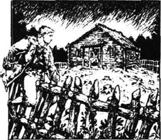
海盗们并没有反击，所以我们有时间来治疗伤员。这场战斗中倒下的八个人中有三个还没咽气。一个海盗，亨特，还有斯摩列特船长；他们中前两个都快死了。海盗先死了，过了几个小时亨特也死了。
船长伤得挺重但并不危险。大夫告诉他不能走动也不能动胳膊，只在必要的时候才能说话。
午饭后，乡绅和大夫在船长身边坐下来商讨军情。时间刚过正午，大夫拿起帽子和枪，还有一把短剑，把地图放在口袋里，迅速地消失在树林里。
我猜测他是去和本·葛恩碰头的。我甚至羡慕他走在树林的阴凉里。木屋里热得很，周围有那么多的血，横着那么多尸体。忽然间我想逃离这地方——我有了主意！我去看看本·葛恩的小船。也许我们什么时候用得着它。这只是我自己的借口而已，我知道只留下两个未受伤的人守卫木屋是错误的，而且我这次擅自行动也是不合适的，但我还是这样做了。
我把两只口袋装满了面包，然后拿了两把手枪，带上足够的弹药。乡绅和葛雷正忙于照顾船长的时候，我迅速爬出木屋，跑进了树林。
我一直向东海岸走去。已经是下午晚些时候了，还是那么热。不久凉爽的风阵阵袭来，我突然到了海边。我沿着海边走去，走上一个沙子覆盖的小山。
本·葛恩告诉过我他的小船藏在白岩石附近，我在远处的海边找到了那岩石。小船藏在草丛中——是木头和山羊皮制成的船，又小又粗糙。
我知道我应该立刻回到寨子里去，但一种意念驱使我坐下来等着天黑。在落日的最后一丝余光消失之后，我只能看见两点火光。一个是岸上海盗们巨大的篝火堆，海盗们围着篝火喝酒，唱歌；另一个来自海面上的伊斯帕尼奥拉号。
我把小船扛在肩上运到水边，放在海里。这只船非常安全，但极难控制，它就是不朝我要去的方向前进！
我在海上向伊斯帕尼奥拉号划去。我知道如果我在错误的时刻砍断绳索，伊斯帕尼奥拉号就会突然离岸，我的小船也势必倾覆。我抽出刀来一股一股地割绳索，在绳索将断时稍停片刻。我听见船舱里有两个人高声谈话。两个人好像喝醉了，而且都怒气冲冲的。
终于又来了一阵风，大船向我靠近了一些，于是我割断了最后几股绳索。我以最快的速度沿大船边缘推动我的小船，急于在大船撞上来之前逃开。我刚推完最后一掌，我的手忽然碰到大船上挂下来的一条绳子。
我自己也不知道为什么要抓住绳子，但我已经这样做了。我拉住绳子往大船边靠，然后站起来从船舱的窗户往里看。我原来不知道这两个人为什么没在甲板上，不过我只看这一眼就全明白了。伊斯莱尔·汉兹和那个戴红帽的正打作一团，互相扭着对方的脖子。
我又跳回到座板上，扭头向岸上望去。就在我身后的海滩上是海盗们的篝火堆。忽然来了一阵大风，大船和小船被一起拉到了宽阔的海面上。
忽然传来喊叫声和两个人在甲板上急匆匆跑过的脚步声。我俯卧在小船里，心想要是风把我们带到险恶的海面上，我就死定了。我这样俯卧了几个小时，慢慢地睡着了，躺在毫无依靠的小船上梦见家和本葆将军酒店。
我醒来时天已大亮。太阳还被挡在望远镜山后面。这山一直延伸到海里，形成一面峭壁。没有一个好地方可以靠岸，如果贸然靠岸，我就会摔死在岩石上。况且船这么小，我一划，海浪就从船舷涌进来。我决定等着海浪把我带到岛北边较安全的地方再说。
“一定不能让水进来，”我想，“但是在水流平静的地方可以划上几下。”
这是一件很累的工作，我埋头苦干，以至于在伊斯帕尼奥拉号离开我半英里以后我才看到她！但奇怪的事情发生了。那船先是转向北方，然后又忽然向西驶去。
“她失去控制了！”我想。
那船又转了个方向，一点一点向本·葛恩的船靠拢过来，显得又大又危险。忽然，当大船俯身越过一个浪尖时，我正处在另一个浪尖上，大船头正好在我的上方。
我纵身一跳，把小船踩入水中，抓住大船的一根缆绳。然后我听见大船把小船撞沉的声音，我只知道我已无路可逃了。
12 Israel Hands
12
Israel Hands
I lost no time and climbed up the rope on to the deck of the ship. The two men were there, red-cap on his back, Israel Hands against the side, his face white. There was dark blood around them on the deck, and I was sure each had killed the other in their drunken fight.
Then Israel Hands turned with a low cry of pain. He looked across at me and whispered one word: 'Rum.'
I went below to the cabin where there were empty bottles on the floor and tobacco smoke filled the air. I found a bottle with some rum left in it, and found some water and some bread and cheese for myself. I took the bottle back on deck, where Hands drank half the rum before taking the bottle from his mouth.
'By thunder!' he said. 'I wanted some of that. But where have you come from?'
'I've come to take control of this ship, Mr Hands,' I said, 'so please remember I'm your captain.'
He watched me pull down the Jolly Roger and throw it overboard, then he said, 'I expect you'll want to go ashore now. Suppose we talk about it.' There was some colour back in his cheeks but he looked very sick. 'Who's going to sail the ship now? You can't do it; but if you give me food and drink and a handkerchief to tie up my wound, I'll tell you how to sail her.'
'All right,' I agreed. 'We'll go into North Inlet and quietly put her on the beach there.'
In three minutes I had the Hispaniola sailing easily before the wind, along the coast of Treasure Island. Then I went below and got a handkerchief and helped Hands tie up the great bleeding wound in his leg. He ate a little and drank more of the rum, then he began to look a little better.
We sailed ahead of the wind, the island moving past quickly. After my success, I was less sorry about deserting the stockade. There was only one thing that worried me. It was the way Israel Hands watched me at my work, a cold little smile on his face.
We could not put the ship on the beach when we reached North Inlet because the sea was too high. We had to wait, sitting in silence over another meal.
'Cap'n,' Hands said to me, still with that smile on his face, 'my old mate, O'Brien, is dead. Can you throw him overboard?'
'I'm not strong enough,' I said.
There was a pause, then he said, 'Well now, would you be very kind and go down to the cabin and fetch me a bottle of wine, Jim? This rum's too strong for my head.'
I listened to his words but didn't believe them. He wanted me to leave the deck, that was clear, but why?
'Wine?' I said. 'Will you have white or red?'
'I don't mind,' he said, 'as long as it's strong and there's plenty of it.'
'I'll have to search for it,' I told him.
I went below, then took off my shoes and went quietly up the other stairs to watch him. He was on his hands and knees and, although his leg hurt him, he moved quickly across the deck and took a long knife from among some ropes. I could see the blood on it. Then he hid it under his coat and went back to his place.
This was all I needed to know. Israel Hands could move about and now had a weapon, and he was going to try to kill me. But I knew that he wouldn't use the knife until the ship was safely on the beach. I went back to the cabin, put my shoes on again, and picked up a bottle of wine. Then I went back up on deck.
He took a long drink from the bottle of wine, saying, 'Here's luck!'
Afterwards, we sailed into North Inlet and I forgot to watch Hands carefully. We were nearly on the beach and I was looking over the side of the ship. Perhaps I heard a sound or saw his shadow moving, I don't know. But when I looked round, there he was, half-way towards me with the knife in his right hand!
He threw himself at me and I jumped to one side, leaving him to fall on the deck. Quickly, I took a pistol from my pocket and aimed it at him—but the powder was wet and the pistol didn't fire! He got up and came at me with surprising speed, but suddenly the Hispaniola hit the sand and went over on one side. We were both thrown down and began to roll across the deck, but I was on my feet first and climbed up into the sails, hand over hand. When I was in a safe place, I loaded my pistols, this time with dry powder.
Hands was pulling himself up among the sails now, the knife between his teeth.
'One more step,' I said, 'and I'll kill you!'
'Jim,' he said. He took the knife from his mouth to speak, and looked beaten. 'We'll have to make peace, you and I. You're too sharp and quick for an old sailor like me...'
But then, with a sudden movement, his hand went back and something went speeding through the air. I felt a sharp pain, and I was pinned to the mast by my shoulder. In the terrible pain and surprise of the moment, both my pistols went off and fell from my hands.
They did not fall alone. With a cry, Hands fell into the water. He came up, the water around him red from his blood, then he went down again, for ever.
I felt sick and frightened. The blood from my wound ran over my back and chest, and the knife seemed to burn like hot iron. But I was trembling so badly that it shook the knife out of my skin, and I could move again. I climbed down through the sails, then went below to tie up my wound. There was a lot of blood but it wasn't deep. Next, I went up on deck. It was now evening and a light wind was blowing, so I lowered the sails before climbing down a rope and into the sea.
The water was only waist-deep and I walked ashore. The sun had gone now and, once on dry land, I began to walk to the stockade. Perhaps the others would blame me for deserting, I thought, but Captain Smollett would be pleased I had taken the Hispaniola, I was sure.
When I reached the stockade, the house lay in dark shadow. But on the other side, a large fire had almost burned itself out. This seemed strange, as it had not been our habit to build large fires.
There were no sounds, except for the wind in the trees, and I went quietly round to the eastern side, keeping in the shadows. As I came nearer to the corner of the house, I heard my friends breathing loudly as they slept, and at once felt happier again. I got to the door and looked in, but all was dark and I could see nothing. With my arms out in front of me, I walked in.
Suddenly, there was a high voice screaming in the darkness: 'Pieces of eight! Pieces of eight! Pieces of eight!' It was Silver's parrot, Captain Flint!
Immediately, men began to wake up, and I heard Silver's voice shout, 'Who's there?'
I turned to run, crashed violently against one person, then ran straight into the arms of another.
throw v. to send (something) through the air by a sudden movement or straightening of the arm. 投，掷，扔，抛：Stop ～ing stones at the cars. 别再向汽车上扔石头了。过去式：threw;过去分词：thrown.
desert vt. to leave empty or leave completely. 丢弃，舍弃；抛弃：His presence of mind never deserted him. 他从不失去镇静。deserter n. 背离者，逃兵。
fetch vt. to go and get and bring back. （去）拿来：Run and fetch the doctor! 快去请医生来！fetch and carry 做杂务，打杂。
plenty n. the state of having a large supply of, esp. the needs of life. 丰富，充足；大量：There are good books in plenty. 好书多得很。
pick up to take hold of and lift up. 拿起；捡起；提起：The bird picked up a worm. 鸟把虫叼起。
suddenly ad. happening, done, etc. unexpectedly. 突然地，忽然地，意外地：He fell on the ground suddenly. 他突然摔倒了。sudden adj.
roll v. to (cause to) move along by turning over and over. 滚动，打滚：Rocks were ～ing down the hillside. 石块沿着山坡滚下。
waist n. the narrow part of the human body just above the legs and hips. 腰，腰部：He has no ～. 他胖得看不出腰身。～-deep 齐腰深。
blame v. to consider (someone) responsible for (something bad). 指责，责备；责怪：A bad workman always ～s his tools. 〈谚〉自己笨，怪刀钝。
伊斯莱尔·汉兹
12 伊斯莱尔·汉兹
我不失时机地抓住缆绳，爬上大船的甲板。两个留守的海盗都在甲板上，戴红帽的仰面躺在甲板上，伊斯莱尔·汉兹靠在船舷上，脸色苍白。他们周围的甲板上有斑斑血迹，我断定他们酒醉之后自相残杀，结果同归于尽了。
这时伊斯莱尔·汉兹翻了一下身，痛苦地呻吟了一声。他看了我一眼，吐出一句话：“朗姆酒。”
我下到船舱里，地上全是空瓶，空气中充满了烟味。我发现只有一只瓶子里还有一点儿酒；我给自己找到一些面包干和干酪。我走上甲板把酒递给汉兹，他一口气就喝下去一半。
“妈的！”他说，“我正需要这个。你是从哪儿来的？”
“我是来接管这条船的，汉兹先生，”我说，“记住，现在我是你的船长。”
他看着我降下了骷髅旗，扔到海里，他说：“我看你是想到岸上去。咱们来谈谈吧。”他的脸上露出一点儿血色，但还很虚弱，“现在谁来驾船呢？你肯定不行；但如果你给我点儿吃喝，帮我用一块手帕包扎伤口，我会告诉你如何驾船的。”
“那好吧，”我说，“我要把船开向岛北的水湾，慢慢地登上那里的海滩。”
不到三分钟我就轻而易举地驾着伊斯帕尼奥拉号沿着金银岛顺风而行了。然后我下去找到一条手帕，帮助汉兹包扎他腿上鲜血直流的伤口。他吃了一点儿东西，又喝了不少酒，看起来比刚才好多了。
我们乘风航行，岛上的景物迅速向后退去。我终于成功了，因而对不辞而别的内疚也减少了许多。只有一件事让我担心，那就是汉兹看我干活儿的表情，他的脸上总带着冷笑。
因为海水太深，当我们到达北部水湾时，我们没法让船冲上岸滩。于是我们默默地坐下来，一边吃些东西一边等待。
“船长先生，”汉兹对我说，脸上还带着狡诈的笑，“我的老伙伴奥布赖恩已经死了。你能把他扔到海里去吗？”
“我没这么大力气。”我说。
他顿了一下对我说：“那么，你现在下去给我找一瓶葡萄酒来怎么样？这朗姆酒劲儿太大了。”
我听明白他的话，但一点儿都不信他。显然，他要我离开甲板，但为什么呢？
“葡萄酒？”我问，“要白的还是红的？”
“都行，”他说，“只要多一些，有点儿劲儿就行。”
“好吧，我去找一找。”我说。
我跑下去，然后脱下鞋爬上梯子看他。他用两手和两个膝盖爬行。尽管腿受伤了，他还是爬得很快，然后从甲板上一盘缆绳下面找出一把长刀。我可以看见上面的血迹。然后他把刀藏在衣服下面，回到原处。
这正是我需要知道的一切。伊斯莱尔·汉兹能够爬行而且他现在有了武器，他想杀掉我。但我相信在伊斯帕尼奥拉号安全抵达沙滩之前他不会杀我的。我回到船舱，穿上鞋，找到一瓶葡萄酒回到甲板上。
他拿起酒瓶喝了个痛快，嘴里喊着：“百事如意！”
然后，我们把船驶往北部水湾，我也忘了注意汉兹。我们快到海滩了，我向船侧面望了一下。也许我听见了什么声音或看见了他的影子在动，当我回过头去的时候，汉兹右手举着刀都快到我眼前了！
他扑向我而我跳到一旁，他摔倒在甲板上。我迅速地掏出手枪瞄准他——但是火药受潮了，枪没响！他起身以惊人的速度向我扑过来，正在这时伊斯帕尼奥拉号突然搁浅，向一侧倾斜。我们都失去平衡，滚向一边，但我先站起来一跃，两手交替着爬上桅杆。我爬到安全的地方，把手枪换上干火药。
汉兹嘴里衔着刀，也慢慢地爬向桅杆。
“你要再上来一步，”我说，“我就杀了你。”
“吉姆，”他说，从口中取下长刀，“咱们来讲和吧，像我这样一个老海员斗不过你这样身手矫捷的年轻人……”
但是突然，他的手向后一挥，就见一件东西嗖的一声飞过来。我感到一阵剧痛，我的肩膀被钉在了桅杆上。就在这巨痛和吃惊之际，我的双枪响了，随即枪也从手中滑落。
掉下去的不光是两枝枪。汉兹大叫一声，掉到了水里。他先是浮上来，血把周围的水染红了，然后又沉下去，永远上不来了。
我感到一阵恐惧和恶心。血从我的伤口流到背上和胸上，那把长刀像火红的烙铁在我的肩膀上。我使劲地发抖，以至于那把刀掉下去了，我又可以动了。我顺着桅杆溜下来，到船舱包扎好伤口。我流了很多血，但伤得不深。然后我来到甲板上。现在已经是晚上了，微风轻拂，我降下帆，然后顺着一条绳子下到海里。
海水仅及我的腰部，我向岸上走去。太阳已经落山了，我一上岸就直奔寨子而去。也许别人会指责我逃跑，我琢磨着，可是斯摩列特船长一定会为我夺回了伊斯帕尼奥拉号而高兴。
我到寨子的时候，木屋笼罩在黑暗中。在另一边有一堆快燃尽的篝火。这很奇怪，这么大的篝火不可能是我们烧的。
周围一点儿动静都没有，只有树林中的风声。我绕到寨子东边，尽可能躲在阴影中。我接近木屋的时候，听见我的朋友们熟睡的鼾声，立即高兴起来。我找到门向里看，屋里一片漆黑，什么也看不见。我伸出手摸索着走进屋。
突然，一个声音响起来：“八个里亚尔！八个里亚尔！八个里亚尔！”是西尔弗的鹦鹉，“弗林特船长”！
随即，人们都醒了，我听见西尔弗喊道：“谁在那儿？”
我转身就跑，刚挣脱了一个人，又被另一个人抓住。
13 A prisoner of the enemy
13
A prisoner of the enemy
Somebody brought a light and I saw the inside of the house. Five pirates were on their feet, and another man was lying down with a head wound. But my heart became filled with fear when I saw no prisoners. Were my friends all dead?
'Here's Jim Hawkins!' said Silver. 'How friendly of you to visit us, Jim!'
'Where are my friends?' I asked.
Silver answered in a smooth voice. 'Yesterday morning, Doctor Livesey came down with a white flag. "Cap'n Silver," he said, "you've lost. The ship's gone." We looked out and, by thunder, the ship had gone! "Let's bargain," said the doctor. So we bargained, and here we are, in the house. And your friends? They walked off and I don't know where they are. And now, are you going to join us, Jim?'
'You're in trouble,' I said. 'Ship lost, treasure lost, men lost. And if you want to know who did it—it was me! I was in the apple barrel the night we saw the island, and I heard every word you said. And the ship? It was me who cut her ropes and killed the men aboard her, and it's me who has sailed her to a place where you'll never find her. Kill me if you like, but if you let me live, I'll do what I can to save you when you're arrested and brought to trial for piracy.'
One man swore and jumped forward with his knife.
'Get back there!' cried Silver. 'Did you think you were cap'n here, Tom Morgan? Well, there's never been a man to stand against me and see another day!'
Angry whispers came from the other men.
'Did any of you gentlemen want to argue with me?' shouted Silver. 'Well, I'm ready. Let him take a knife, and I'll see the colour of his inside!'
Not a man answered. I listened to my heart beating. Silver waited calmly, his pipe in his mouth, as he watched his followers. Slowly, they got together at the far end of the house and whispered to each other.
'You seem to have a lot to say,' said Silver. 'Let me hear it, or stop talking.'
'We'll go outside and talk,' replied one man. And he stepped calmly towards the door and disappeared out of the house. One after another, the rest of the men did the same.
'They're going to kill you, Jim,' said Silver when the two of us were alone, 'and they're going to stop me being their captain. When I looked into that bay and saw the ship was gone, I knew it was all over. Now, I'll save your life, if I can, but it must be a bargain—you must save Long John from dying under the law.'
'I'll do what I can,' I told him.
'There's trouble coming, Jim,' he said. 'And talking of trouble, why did the doctor give me the map?'
I stared at him in great surprise. Why indeed?
'Well, he did,' Silver went on. 'And that's strange.'
The door opened and the five pirates came in. They pushed one man forward and he gave something to Silver.
The sea cook looked at what the man had given him. 'The black spot!' he said. He turned the paper over. 'What's this? No longer captain. You're becoming quite a leading man in this crew, George Merry. You'll be cap'n next, I suppose. But tell me what's wrong.'
'I'll tell you what's wrong!' said George. 'First, you made too many mistakes on this trip. Second, you let the enemy out of this trap for nothing. And then there's this boy.'
'Is that all?' asked Silver quietly.
'It's enough,' replied George.
'Well, I'll answer you,' said Silver. 'You all know what I wanted but you wouldn't listen, would you? In my plan, we'd be on the Hispaniola now, every dead man alive and the treasure on ship, by thunder! Next, this boy. Well, we'll use him to bargain with. He might be our last chance. And the doctor? You've been glad enough to have a doctor coming to see you every day—you, John, with your head broken... or you, George, sick and shaking with fever only a few hours ago. I made a bargain, that's why I let'em go!' He threw a piece of paper on to the floor. It was the map with the three crosses.
The pirates jumped on it like cats upon a mouse.
'Very pretty,' said George, 'but how are we going to get away with the treasure, when we have no ship?'
'You tell me, George!' shouted Silver. 'You and the others lost the ship; I found the treasure. But I'll not be your captain any longer!'
'Silver for cap'n!' shouted the pirates.
After a moment, the sea cook smiled. 'George,' he said. 'I think you'll have to wait a while before you get another chance to be captain.'
Early in the morning Dr Livesey came to the stockade.
'We've a surprise for you, doctor,' Silver called out. 'We've a little stranger here.'
The doctor was now inside the stockade. 'Not Jim?'
'The very same Jim,' said Silver.
The doctor stopped. 'Well, well,' he said. Then he went on, 'Let's see these sick men of yours, Silver.'
A moment afterwards, he entered the house. With one look at me, he went to his work among the sick.
'Well, that's done,' he said, after visiting each man. 'And now I'd like to talk to that boy, please.'
'No!' cried George Merry.
'Silence!' shouted Silver. 'Hawkins,' he went on in his usual voice, 'will you promise not to escape?' I gave the promise. 'Then, doctor,' said Silver, 'you just step outside that stockade, and when you're there, I'll bring the boy down on the inside. You can talk through the fence.'
The men's anger exploded after the doctor left the house, and they accused Silver of trying to make a separate peace for himself. Silver waved the map in front of them and told them they were stupid.
'By thunder!' he cried. 'We'll break the peace when the right time comes—and that's not now!' And then he walked out on his crutch, his hand on my shoulder. 'Slowly, boy,' he whispered to me. 'We don't want to worry them.'
Dr Livesey was waiting outside the stockade. 'The boy will tell you how I saved his life,' Silver said through the fence. 'Will you say a good word for me?'
'You're not afraid, John, are you?' asked Dr Livesey.
'I don't like the idea of dying by the law,' said Silver. 'And now I'll leave you and Jim alone.'
'So, Jim,' said the doctor, 'here you are. I'm disappointed in you. You went away when Captain Smollett was wounded, which wasn't a brave thing to do.'
'Doctor,' I cried, 'I've blamed myself enough.'
'Jim,' said the doctor, his voice changed. 'Jim, I can't have this. Jump over and we'll run!'
'No,' I said. 'I promised Silver I wouldn't escape, and I must go back. But listen, I took the ship and she's in North Inlet, on the beach.'
'The ship!' cried the doctor.
I told him my story and he listened in silence. Then he said, 'It's you that saves our lives, Jim, and now we'll save yours. Silver!' he called, then as the cook came nearer, said, 'Some advice—don't hurry to find that treasure. If you do, watch out for storms.'
'What's the game, doctor?' said Silver. 'Why did you give me the map?'
'I can't say more,' said the doctor. 'It's not my secret to tell. But if we both get out of this alive, Silver, I'll do my best to save you. Now, keep the boy close beside you, and when you need help, shout for it.'
Then Dr Livesey hurried off into the wood.
lie vi. (of a person）to be in a flat resting position, as on the ground or a bed. 躺，平躺：The wounded man was lying on the battlefield. 伤兵躺在战场上。过去式：lay; 过去分词：lain.
bargain v. to talk about the conditions of a sale, agreement or contract. 议价，讨价还价：make a ～ with sb. 与某人成交。～ counter [美]廉价货品柜。
calmly ad. quietly. 平静地；宁静地；镇定地：He stood ～ in front of the crowd. 他镇静地站在人群面前。
leading a. guiding, directing. 领导的；指导的：～ question [律师]诱导性的提问。～ seaman （英）海军一等水兵。
suppose v. to take as likely; consider as true. 猜想，料想：I ～(that) he is not yet twenty. 我猜想他还不到二十岁。be ～d to 被期望，应该：we are ～d to be here at seven. 我们应该7时到达这里。
usual a. customary. 通常的，平常的：He asked the ～ questions. 他问了一些寻常的问题。as ～ 像平常一样，照常。反义词：unusual.
disappointed a. (of a person) unhappy at not seeing hopes come true. 失望的，沮丧的：I was ～ to hear that the party had been cancelled. 听说宴会已取消我很失望。
hurry [ˈhʌri] v. 赶紧，匆忙 to (cause to) be quick in action, sometimes too quick: No need to ～. 不必急匆匆。Hurry up, or we'll be late. 快一点，不然咱们要迟到了。
敌人的俘虏
13 敌人的俘虏
有人拿来了火，我看清了房子里的情形。有五个海盗站在那里，还有一个头受了伤躺在地上。我看到没有俘虏，心里就害怕起来。我的朋友们都死了？
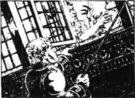
“原来是吉姆·霍金斯！”西尔弗说，“欢迎你来我们这儿，吉姆！”
“我的朋友们在哪儿？”我问。
西尔弗用流畅的语调开始讲：“昨天早上，李甫西大夫打着白旗来找我们。‘西尔弗船长，’他说，‘你们失败了，船已经开走了！’我们跑出去一看，船果然不见了。‘我们来讲条件吧。’大夫说。我们跟他讲妥了条件，我们就到这里来了。你的朋友？他们走了，我也不知道他们去哪里了。现在你愿意和我们一起干吗？”
“你们的处境很不妙，”我说，“船丢了，财宝丢了，人也丢了。如果你们想知道是谁干的，告诉你们，是我干的。我们看见陆地的那天晚上，我躲在苹果桶里听到你们讲的所有的话。至于那条船，也是我割断了绳索，杀死了船上的人，然后把船驶到你们谁也找不到的地方。要杀要放随你们便，但如果你们放了我，将来你们因为当海盗受审判时，我将尽力救你们的命。”
一个人骂着拔出刀站起来。
“住手！”西尔弗喊道，“你以为在这儿你是船长吗，汤姆·摩根？跟我作对的人从来都活不到第二天！”
其他的人发出了不满的声音。
“你们有谁想跟我争吗？”西尔弗嚷道，“我准备好了。让他拿把刀，我定要看看他的五脏六腑是什么颜色！”
没什么人答话。我的心扑扑地跳。西尔弗静静地等着，嘴里叼着烟斗，不停地看着他的同伙。慢慢地，那帮海盗退到木屋的一边，交头接耳低语起来。
“你们像是有许多话要讲，”西尔弗说，“讲出来让我听听，要不就闭嘴。”
“我们到外面去说。”一个人说，他静静地走出木屋。其他人也一个一个走出木屋。
“他们要杀掉你，吉姆，”屋里就剩我们两个人时西尔弗说，“他们不想让我当船长了。当我向海湾望去，看见船失踪了，我就知道全完了。现在我要救你，但我们必须讲条件——你也得帮高个儿约翰免上绞架。”
“我能做的一定去做。”我说。
“就要有麻烦了，吉姆，”他说，“说到麻烦，大夫为什么把那张图给我？”
我盯着他，脸上露出惊讶的表情。为什么呢？
“真的，他把图交给我了，”西尔弗继续说，“这里面一定有文章。”
门开了，五个海盗走进来。他们把其中一个人往前推，那个人交给西尔弗一样东西。
这位海上厨子看了看同伙给他的东西。“黑券！”他说道，然后看纸的背面，“写的什么？下台！你在这伙人中确实是个人物，乔治，我猜接下来一定是你当船长。告诉我为什么。”
“我来告诉你为什么！”乔治说，“第一，在这次航行中你犯了不少错误。第二，你白白从这地方把敌人放走了。还有就是这个孩子的事。”
“还有吗？”西尔弗沉着地问。
“这些就足够了。”乔治说。
“好吧，现在我回答你，”西尔弗说，“你们都知道我想如何行事，但你们都没听，对吗？如果照我说的去做，我们早已回到伊斯帕尼奥拉号上，不会死一个人，船上装满了财宝！还有，这个孩子。现在我们得用他来讲条件。这是我们最后的机会。至于那大夫，约翰，你的头受伤了，你不是曾经很高兴大夫每天来照看你吗？还有你，乔治，几小时前还发烧发抖，病得不行。所以我做了交易，让他们走了！”他把一张纸扔到地上，正是那张画着三个叉叉的地图。
那帮海盗像猫见了老鼠一样扑过去。
“这太好了，”乔治说，“可是咱们没有船，怎么把财宝运走？”
“该你告诉我，乔治！”西尔弗嚷道，“你和他们丢掉了船；我找到了宝藏。但我将不再当你们的船长了。”
“西尔弗当船长！”那帮海盗喊道。
过了一会儿，船上的厨子笑了。“乔治，”他说，“你想当船长还得等上一段时间。”
第二天一早，李甫西大夫就来到寨子。
“我们有件意想不到的事告诉你，大夫，”西尔弗说，“我这儿有位小客人。”
大夫已经进了寨子，“难道是吉姆吗？”
“正是吉姆。”西尔弗说。
大夫停住脚步。“好吧，”他说，“先去看你的病人吧，西尔弗。”
他随即走进木屋，看了我一眼，然后去看那些病人。
“好了，都看完了，”大夫说，“现在我想和那个孩子谈谈。”
“不行！”乔治·墨利大叫起来。
“住嘴！”西尔弗喊道，“霍金斯，”他仍然用那种平和的语调说，“你能保证不逃跑吗？”我答应了他。“那么，大夫，”西尔弗说，“你先走到围栏外边去，你到了那里，我就把孩子带出来，你们可以隔着围栏交谈。”
大夫刚走出木屋，海盗们的不满情绪就爆发了，他们都指责西尔弗单独媾和。西尔弗向他们扬了扬地图，说他们都太蠢。
“妈的！”他叫道，“时机一到，咱们当然要撕毁协议——但不是现在！”他拄着拐杖走出屋子，一只手放在我肩上。“慢点儿走，孩子，”他对我说，“我们不能让他们起疑心。”
李甫西大夫正在寨子外边等着。“这孩子会告诉你我如何救了他的命，”西尔弗隔着围栏说，“你不能给我说句好话吗？”
“你是不是害怕了，约翰？”李甫西大夫问道。
“我不想上绞架，”西尔弗说，“现在你和吉姆单独谈吧。”
“唉，吉姆，”大夫说，“你又回来了。我对你很失望。斯摩列特船长受伤的时候，你倒跑了。真是懦夫行为！”
“大夫！”我哭了，“我已经自责过了。”
“吉姆，”大夫换了一种语气对我说，“吉姆，咱们不能这样。跳过围栏，咱们跑吧。”
“不，”我说，“我向西尔弗保证过不跑，我必须回去。听着，我把船夺过来了，现在停在北面的海滩。”
“船！”大夫叫起来。
我把自己的经历给他讲了，他静静地听着，然后说：“是你救了我们的命，我们也要救你出来。西尔弗！”他叫道。等那厨子走近了，他又说：“我要劝你一句，别太着急去寻宝。如果你那样做了，请小心风暴。”
“大夫，你这玩的是什么把戏？”西尔弗说，“你为什么给我那张图？”
“我不能再多说了，”大夫说，“这不是我个人的秘密。如果我们都能活着离开这儿，西尔弗，我会尽力救你的命。让这孩子待在你身边，如果你需要帮助，就喊我。”
然后李甫西大夫匆匆向树林里走去。
14 Looking for the treasure
14
Looking for the treasure
We went back to eat our breakfast.
'They have the ship,' Silver told the men, 'and I don't know where it is. But once we have the treasure, we'll find it soon enough. I'll keep the boy close by me when we look for the treasure; then, when we have both ship and treasure, we'll persuade Jim to join us, and give him some of the treasure for all his help.'
The men were happy, but I was afraid. If Silver's plan came true, he would forget Dr Livesey and the others, I was sure. And if things went wrong, how could a boy and a one-legged man fight five strong men?
When we left the stockade, everyone had weapons except me. Silver had two guns; and the parrot, Captain Flint, sat on his shoulder. There was a rope around me and I followed after Silver, who held the other end.
Some of the men carried spades, others food and rum, and we made our way to the beach where the two boats were waiting. The men talked about the map. The cross was too large to be of much help, and the words on the back of the map were no better.
Tall tree. Spyglass shoulder, to the North of North-North-East.
Skeleton Island East-South-East and by East.
We landed the boats at the mouth of the second river, then began to climb Spyglass Hill. Silver and I followed a long way behind the rest, and I had to help him. We were near the top when a man on the left cried aloud. The others started to run towards him.
'He can't have found the treasure,' said Morgan.
And indeed it was something very different—the bones of a human skeleton, a few pieces of clothing still on it. Cold fear filled every heart.
'He was a seaman,' said George Merry.
'Yes,' agreed Silver. 'But look at the way those bones are lying—it isn't natural.' The man lay perfectly straight—his feet pointing one way, his hands, over his head, pointing the opposite way. 'I've got an idea,' said Silver. 'Look! We can see the top of Skeleton Island from here. These bones are a pointer, telling us which way to go!'
He was right. Our compass showed that the body pointed straight towards Skeleton Island, and in a line East-South-East and by East.
We left the skeleton behind, but now the pirates kept together and talked in frightened whispers. At the top of the hill, Silver took out his compass again.
'There are three tall trees,' he said, 'in about the right place. Spyglass shoulder must be that lower place, there. A child could find the treasure now!'
Suddenly, out of the middle of the trees in front of us, a high shaking voice began to sing:
Fifteen men on the dead man's chest—
Yo-ho-ho, and a bottle of rum!
The effect on the pirates was terrible to see. The colour went from their six faces, and they caught hold of each other like frightened children. Morgan fell to the ground, trembling with fear.
'It's Flint!' cried George Merry.
'No!' said Silver, fighting to get the word out. 'It's someone playing games—it's no ghost!'
Then the voice came again: 'Darby M'Graw!' it screamed. 'Darby M'Graw! Fetch the rum!'
The pirates were fixed to the ground after the voice died away, their staring eyes full of horror.
'That does it!' said one. 'Let's go!'
'Those were Flint's last words before he died,' cried Morgan.
'I'm here to get that treasure,' shouted Silver, 'and I'll not be beaten by man or ghost! I was never afraid of Flint in his life and, by thunder, I'll face him dead! There's seven hundred thousand pounds not a quarter of a mile from here. I'll not leave that much money for a drunken old seaman—him dead, too! And there's something strange. There was an echo, and no man ever saw a ghost with a shadow, so why should a ghost's voice have an echo? It's not natural.'
The words calmed George Merry. 'Yes, that's right,' he said. 'Now I think about it, it was like Flint's voice, but not exactly like it. It was like another person's voice... more like—'
'Ben Gunn!' shouted Silver.
'If it was, it's still a ghost,' said Dick. 'Ben Gunn's not here in body, any more than Flint is.'
But the older men laughed. 'Nobody minds Ben Gunn, Dead or alive,' cried George.
The men were happy again, the colour back in their faces as they talked together and began to walk on. George Merry went first, leading the way with Silver's compass.
We reached the first tall tree, but it was the wrong one. So was the second. The third was tall enough to be seen from the sea, both east and west of the island. My companions hurried on, desperate to get their hands on the seven hundred thousand pounds in gold which lay somewhere under the tree's shadows.
Silver pulled at the rope that held me, and turned his eyes upon me with a deadly look. I could read his thoughts. So near to the gold now, everything was forgotten—his promise and the doctor's warning. I knew he hoped to take the treasure, cut every honest throat on that island, find and board the Hispaniola at night, and sail away a rich man and a murderer.
Suddenly, George Merry shouted, 'All together, boys!', and the men began to run. Not ten metres farther on they stopped and cried out. Silver moved quickly, and the next moment we were with them. Before us was a large hole, but it was not a new hole because grass grew on the bottom.
There was no treasure.
The seven hundred thousand pounds had gone!
once conj. from the moment that. 一旦……（就……）：～ you show any fear, he will attack you. 你一旦露出惧色，他就会袭击你。Once bit twice shy. [谚]一次被咬，下次胆小。～ upon a time （常用于故事开头）从前。
land v. to come to, bring to, or put on land or water. 使靠岸；使登陆；使降落：The ship ～ed at the pier on Saturday. 船在星期六靠码头。
indeed ad. certainly; really. 真正地，真实地；当然：She was a very beautiful girl ～. 她确实是个非常美丽的姑娘。
compass n. an instrument for showing direction. 罗盘，罗盘仪。
echo [ˈekəu] n. a sound sent back or repeated. 回声，回音；反响： The economic collapse had dangerous political ～es. 经济崩溃引起了政治上的危险反响。复数：echoes
companion n. a person who willingly or unwillingly shares the work, pleasures, worries, etc.. 同伴；同事；志趣相同的人：They were working ～s. 他们是同事。同义词：comrade, friend, colleague.
grow v. (of (parts of) living things) to increase in size by natural development. 生长，成长：The rice is ～ing fine. 稻子长得不错。过去式：grew；过去分词：grown. ～ downwards 缩小；减少。～ out of 产生自...The mistake ～ out of his carelessness. 错误是由于他的粗心造成的。
寻宝记
14 寻宝记
我们回去吃了早餐。
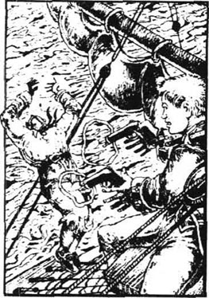
“他们有船，”西尔弗说，“我不知道在哪儿，但我们一旦找到宝藏，很快就会找到船。我们寻宝时我会把这孩子带在身边；然后，我们会同时拥有船和宝藏，我们会说服吉姆入伙，分给他一些财宝。”
那伙人都挺高兴，我却害怕起来。如果西尔弗的计划成真的话，他肯定会忘掉李甫西大夫和其他人。而事情如果搞砸了，一个孩子和一个瘸子哪敌得过五个壮汉？
我们离开寨子，除我之外每个人都带着武器。西尔弗带着两枝枪；那只名叫弗林特船长的鹦鹉在他肩上。我跟在他身后，腰里拴着一根绳子，另一端在他手里。
其余的人拿着镐，食物，还有朗姆酒。我们来到停着两只小船的岸边。他们讨论着地图上的标记。叉画得太大了，表示不了确切地点，背面的说明文字也好不到哪儿去。
望远镜肩上一棵大树，方位北北东偏北
骷髅岛，东南东偏东。
我们把小船停在第二条河的河口处，然后上岸开始爬望远镜山。西尔弗和我远远落在这伙人的后面，我还得帮他。我们快到山顶时，左边一个人大叫一声，大伙都向他跑去。
“他不可能发现了宝藏。”摩根说。
的确是件完全不同的事，地上有一具死人的骨架，上面还留着一些衣服的碎片。每个人心里都一阵颤栗。
“他是一个水手。”乔治·墨利说。
“是，”西尔弗说，“不过看看这骨架的姿势，好像很不自然。”死人躺得笔直，脚指着一个方向，手举过头指着相反的方向。“我有个主意，”西尔弗说，“我们从这儿可以看见骷髅岛的顶部，这骨架为我们指明了方向！”
他是对的。指南针显示死人正好指向骷髅岛，方位正好是东南东偏东。
我们离开骨架，但现在海盗们都聚在一起走了，有时还害怕地嘀咕着什么。到山顶的时候，西尔弗又拿出了罗盘。
“那边有三棵大树，”他说，“大约就是那地方。‘望远镜的肩膀’肯定就是那片低地。现在连小孩都能找到宝藏了！”
正在这时，从我们前方的树林里传出带着颤音的水手老调：
十五个人趴在死人身上——
唷呵呵，朗姆酒一瓶，快来尝！
那帮海盗们的丑态真是惨不忍睹。他们六个人都变了脸色，互相抓着，像受惊的孩子一样。摩根趴在地上，吓得直发抖。
“是弗林特！”乔治·墨利叫道。
“不！”西尔弗好不容易才说出来，“有人闹着玩儿，不是鬼魂。”
不一会又传来那声音：“达比·麦克格雷！”声音尖厉，“达比·麦克格雷，拿朗姆酒来！”
那帮海盗站在那里一动不动，像脚下生了根，眼里充满了恐惧。
“这就是了！”有人说，“咱们走吧！”
“那是弗林特死前最后一句话。”摩根喊道。
“我来这儿是寻宝，”西尔弗嚷道，“我不会被什么人或鬼打败！妈的，我也不怕他的鬼魂。离这儿不到1/4英里有70万英镑。不能因为碰上个死了的老醉鬼就扔掉这么多财宝不要啊。而且有点儿怪。刚才的声音有回音，而且也没人看见过鬼魂还有影子。为什么鬼魂的声音还有回音？这很奇怪。”
这些话让乔治·墨利平静了一些。“没错，”他说，“我现在想起来了。那声音很像弗林特的，但又不确切。挺像另一个人的声音……更像——”
“本·葛恩！”西尔弗叫道。
“如果是的话，也还是鬼魂的声音，”迪克说，“本·葛恩也是个死人，和弗林特一样。”
年长的几个人笑起来。墨利嚷道：“谁也不把本·葛恩放在眼里，不管他是死是活，谁也不怕他。”
那帮人又高兴起来，脸上渐渐有了血色，他们开始边说边赶路。乔治·墨利走在前面，拿着西尔弗的罗盘领路。
我们走到第一棵大树下，但证明是错的。第二棵也是如此。第三棵树很高，从东西两面的海上都能看见。我的同行者们急忙赶过去，一心想得到藏在树阴下的70万英镑财宝。
西尔弗拽着绳子，恶狠狠地瞪着我。我明白他的心思。现在离宝藏越来越近了，他忘了一切——他的保证和大夫的劝告。我知道他希望找到宝藏后杀掉每一个诚实的人，晚上找到伊斯帕尼奥拉号逃掉，做一个富翁和杀人犯。
忽然，乔治·墨利喊道：“都过来！”大家都跑过去。不出十米，大伙都停下来惊叫起来。西尔弗迅速过去，我们很快和他们在一起了。在我们面前是个大洞，显然不是新挖的，因为底部长满了野草。
洞里没有宝藏。
价值70万英镑的财宝不翼而飞了！
15 End of an adventure
15
End of an adventure
The pirates could not believe it, but Silver remained calm and changed his plan quickly.
'Jim,' he whispered, 'take that, and be ready for trouble.' And he passed me a pistol.
At the same time he began to move quietly and, after a few steps, the hole was between us and the other five. He looked quite friendly now, and I couldn't help whispering, 'So you've changed sides again!'
The pirates began to jump into the hole, and to dig in the ground with their fingers. Morgan found a two-guinea coin, and it went from hand to hand.
'Two guineas!' shouted George Merry, shaking it at Silver. 'That's your seven hundred thousand pounds! You're the man for bargains, are you? You're the one who never made a mistake!'
'Wanting to be captain again, George?' said Silver.
But this time, everyone was on George Merry's side, and they began to climb out of the hole.
'There's just the two of them,' said George. 'The old one-legged man who brought us all here for nothing; and that boy who I'm going to have the heart of!'
He was raising his arm and his voice, ready to lead them, but there was a sudden CRACK! CRACK! CRACK! as three gunshots came from the woods. George Merry fell head first into the hole, and another fell on his side, dead. The other three turned and ran.
A moment later, Dr Livesey, Gray, and Ben Gunn joined us with smoking guns, from among the trees.
'Keep them off the boats!' cried the doctor.
We began to run at a great speed through the trees, and Silver was soon thirty metres behind us.
'Doctor!' he shouted. 'There's no hurry! Look!'
We saw he was right. In a more open place, we could see the three pirates, still running, and we were already between them and the boats. So we sat down to rest while Long John came slowly up to us.
'Thank you, doctor,' he said. 'You came at the right time to save me and Hawkins.' He looked at Ben Gunn. 'So it was you, Ben Gunn, playing the ghost!'
We walked down the hill to the boats and, as we did so, the doctor told Silver and me his story. But it was really Ben's story from beginning to end.
Ben, in his lonely walks around the island, had found the skeleton and found the treasure. He had carried the gold on his back in many journeys, and had taken it to a cave on the northeast corner of the island, two months before the Hispaniola arrived.
Ben had told the doctor this, and the next morning the doctor gave Silver the map—which was now useless—and gave him the food at the stockade, because there was plenty in Ben Gunn's cave. That morning, when the doctor saw I had to go with the pirates to find the treasure, he had left the squire to look after the captain, then took Gray and Ben Gunn with him to be ready to help us.
'I was lucky Hawkins was with me,' said Silver, 'or old John would be dead by now, for sure.'
By this time, we were at the boats. The doctor smashed one with an axe, and then we all got into the other and rowed to North Inlet. The Hispaniola was moving by herself now, the sea high enough to take her off the beach. We went round to Rum Cove, the nearest landing place for Ben Gunn's cave of treasure, then Gray left us there before rowing back to guard the ship for the night.
Mr Trelawney met us at the cave. He didn't blame me for my desertion, but he spoke differently to Silver. 'Silver,' he said, 'you're a scoundrel and a murderer, but I'm told that I must save you from the law.'
'Thank you, sir,' replied Long John.
'I don't want your thanks!' cried the squire.
We all entered the cave. It was large and pleasant, with fresh water coming from a place in the ground, and a floor of sand. Captain Smollett lay in front of a big fire, and in a corner I saw coins and gold bars. It was Flint's treasure!
We had come so far to find this. Already it had cost the lives of seventeen men from the Hispaniola. And how many others? How many ships had gone to the bottom of the sea? How many brave men had been murdered for this? Perhaps no man alive could tell.
Next morning, we moved all the gold to the beach. Then we took it by boat to the Hispaniola. It was a big job for so small a number of men.
The three pirates who were still on the island did not trouble us. They were not going to fight any more, and we decided we must leave them on the island. We left powder, food, clothes and medicine for them.
Then at last, one sunny morning, we sailed out of North Inlet and towards the nearest port in Spanish America. Before afternoon, Treasure Island had disappeared from view, and I had never felt happier to leave a place behind.
The sun was going down when we sailed into the port, and the doctor and Mr Trelawney took me on shore. When we came back, Ben Gunn was waiting for us.
'Silver has gone,' he told us, 'but not empty-handed. He's taken one of the bags of coins, perhps worth three or four hundred guineas.'
I think we were all pleased to lose the scoundrel at so small a price.
We found a crew for the ship at the port, and then had a good voyage home. Only five of the men who had sailed from Bristol with the Hispaniola returned with her. We all took a large piece of the treasure, and some used it sensibly, and some did not.
Captain Smollett no longer goes to sea. Gray saved his money and is now half-owner and captain of a fine ship. Ben Gunn got a thousand pounds which he spent or lost in three weeks, then he came begging and was given a job as a gatekeeper.
Of Silver we have heard no more. That frightening seaman with one leg has gone out of my life. I will never return to Treasure Island, but in my worst dreams I still hear the sharp, high scream of Captain Flint the parrot: 'Pieces of eight! Pieces of eight!'
remain to continue to be (in an unchanged state). 保持，仍是：Peter became a judge, but John remained a fisherman. 彼得已成了一个法官，而约翰还是一个渔夫。
journey n. a trip of some distance, usu. by land. 旅行，路程：I wish you a pleasant ～. 祝你一路顺风！～man n. 雇工，计日工，短工。
cave n. a deep natural hollow place. 洞穴；山洞。
save v. to make safe from danger. 救，挽救：cure the sickness to ～ the patient 治病救人。Saving is getting. [谚]节约等于增加收入。
sunny a. having bright sunlight. 阳光充足的；暖和的：I asked for a ～ room. 我要了一间阳光充足的房间。
gatekeeper [ˈɡeitˈkiːpə] n. 看门人。
worst [wəːst] a. most lacking in quality. 最坏的，最差的：He was the worst of all in the game. 他是比赛中最差的一个。此词是bad, ill的最高级形式；常加定冠词the。make the ～ of 对…作最坏打算。
寻宝结局
15 寻宝结局
那帮海盗简直不能相信这一切，但西尔弗仍旧保持镇静并迅速改变了计划。
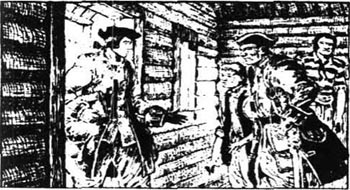
“吉姆，”他轻声说，“拿着这个，以便应付乱子。”他交给我一把手枪。
这时他静静地向前走了几步，那个大洞把我们和那五个海盗隔开。他现在显得十分友好，我禁不住嘀咕起来：“你又站到这边来啦！”
那几个海盗跳到洞里，用手指挖地。摩根找到一枚两畿尼的金币，那金币在他们手中传递着。
“两个畿尼！”乔治·墨利喊道，向着西尔弗扬着手中的金币，“这就是你说的70万英镑吗？你不是个做交易的老手吗？你不是从不失手吗？”
“又想当船长了，乔治？”西尔弗说。
但这次所有的人都站在乔治·墨利一边，他们开始爬出土坑。
“他们只有两个人，”乔治说，“一个是个老瘸子，他把咱们骗到这儿来却一无所获；还有那个小杂种，我都想把他的心掏出来。”
他抬起手臂，说话声调越来越高，显然是要领头发动攻击，但忽然从树林中传来“砰！砰！砰！”三声枪响。乔治·墨利第一个头朝下栽到洞里，另一个也倒在他身边，死了。其他三个人转身就跑。
过了一会儿，李甫西大夫、格雷、本·葛恩从树林里出来和我们会合，他们的枪口还冒着烟。
“别让他们接近小船！”大夫喊道。
我们在树林中猛跑，不一会儿西尔弗就落在三十多米以外。
“大夫！”他喊道，“不用着急，你们看！”
他是对的。我们看到在眼前的开阔地上，那三个海盗还在跑，我们已经处在他们和小船之间。于是我们坐下来休息，高个儿约翰也慢慢地赶上了我们。
“谢谢你，大夫，”他说，“你来得正是时候，救了我和霍金斯的命。”他看着本·葛恩，“原来真是你，本·葛恩，扮鬼吓我们。”
我们下山向小船走去，一路上大夫给我们讲了他的故事，而这一切的主要角色都是那位本·葛恩。
在岛上孤独的本发现了那具尸骨和宝藏。他用肩背扛着宝藏，运到岛的东北角一个洞穴里，不知搬了多少趟，直到伊斯帕尼奥拉号抵达前两个月才运完。
本早就把这一切告诉了大夫，第二天早晨大夫就把那张无用的地图交给了西尔弗，把补给品也给了他们，因为本·葛恩的山洞里有足够的补给品。今天早晨，大夫发现我不得不和那帮海盗去寻宝，他就让乡绅照顾船长，然后带上格雷和本·葛恩跟着我们以防不测。
“幸亏霍金斯在我身边，”西尔弗说，“否则我老约翰早死了。”
这时我们已到停着小船的地方。大夫用斧子砸了一只船，然后我们乘上另一只船向北边划去。伊斯帕尼奥拉号在水上漂浮着，海水较深，使得大船漂离了海滩。我们绕道来到最靠近本·葛恩的藏宝洞的朗姆酒湾，然后格雷乘小船到伊斯帕尼奥拉号上过夜守船。
屈利劳尼先生在洞口迎接我们。他并没责备我逃跑的事，但和西尔弗说话的口气就截然不同了。“西尔弗，”他说，“你是个大坏蛋和刽子手，但是他们却要我不对你提出控告。”
“谢谢你，先生。”高个儿约翰说。
“我不需要你道谢！”乡绅喊道。
我们都进了洞穴。洞里宽阔而空气流通，一股清泉从地上流过。斯摩列特船长躺在一堆篝火前，而在另一个角落我看见了金币和金条。是弗林特的宝藏！
我们远道而来就是为了找到这些。伊斯帕尼奥拉号上已有十七人送了命。此外还有多少人呢？还有多少船沉入了海底？多少勇敢的人为此被人谋杀？恐怕没一个活着的人能讲清楚。
第二天，我们把所有的金子都运到海边，然后用小船运到伊斯帕尼奥拉号上。这是一项浩大的工程，尤其是因为我们只有这么几个人。
岛上其余那三个海盗没有再骚扰我们。他们不想再打仗了，我们决定把他们留在岛上，给他们留下了火药、食物、衣物和药品。
最后，在一个阳光明媚的早晨，我们驶离金银岛北部水湾，驶往西属美洲的一个港口。还没到下午，金银岛就消失在视野中了。能离开这个地方，我高兴不已。
我们到达港口时太阳快要落山了，大夫和屈利劳尼先生带着我上了岸。我们回来时，本·葛恩正在等我们。
“西尔弗跑了，”他说，“但不是空手走的，他带走了一袋子金币，大概值三四百畿尼。”
我觉得大家都为这么便宜就甩掉了这个恶棍而感到高兴。
我们在港口找了几个船员，一路平安回到英国。随伊斯帕尼奥拉号从布里斯托尔出航的全体人员只有五个人回来。我们每个人都分得一大笔财宝，有的人花得很谨慎，有的人则不然。
斯摩列特船长不再出海了；格雷把钱存起来，现在已是一艘装备优良的船的合股船主兼船长；本·葛恩分得了1000英镑，但不到三个星期就花光了，成了一名乞丐，后来找到一个看门人的活计。
至于西尔弗，我们没有再听到有关他的任何消息。那个可怕的独腿海员总算从我的生活中消失了。我永远不会再回到金银岛上，但在我的噩梦中常常响起那只叫弗林特船长的鹦鹉那尖厉的叫声：“八个里亚尔！八个里亚尔！”
Exercises
Exercises
A Checking your understanding
Chapters 1–3 Write answers to these questions.
1 Why did the old seaman decide to stay at the Admiral Benbow Inn?
2 Who did he tell Jim to watch for?
3 Who had only three fingers on his left hand?
4 What happened to Bill after the blind man left?
Chapters 4–6 Who in these chapters ...
1 ... was killed by a horse?
2 ... wrote a letter to Dr Livesey and Jim?
3 ... ran out of the Spyglass Inn as Jim entered?
4 ... seemed angry with everybody on board the Hispaniola?
5 ... came up the side of the ship 'as quick as a monkey'?
Chapters 7–9 Are these sentences true (T) or false (F)?
1 The young seaman Dick decided not to join the mutineers.
2 Silver said that he had been to the island before.
3 The seaman Tom tried to kill Long John Silver.
4 Ben Gunn had been marooned on the island for three years.
5 Ben Gunn didn't want to help Jim.
Chapters 10–12 Who in these chapters...
1 ... found the stockade first?
2 ... killed a pirate with a knife during the night?
3 ... cut the anchor rope of the Hispaniola?
4 ... tried to kill Jim on board the Hispaniola?
5 ... in the stockade was screaming, 'Pieces of eight!'?
Chapters 13–15 Find answers to these questions.
1 Why did the other pirates give Silver the black spot?
2 Why didn't Silver believe that it was Flint's ghost singing?
3 Why was there no treasure in the hole under the tree?
4 Why had Dr Livesey given Silver the Treasure Island map?
5 How many men who had sailed from Bristol returned to England?
B Working with language
1 Complete these sentences with information from the story.
1 Jim had taken Flint's papers from the sea-chest before...
2 When Jim was in the apple barrel,...
3 The seamen Tom and Alan refused to join the mutiny, so...
4 Although the captain was wounded in the battle...
2 Put these sentences in the right order. Check your order with Chapter 12.
1 and it pinned Jim to the mast by his shoulder.
2 Israel Hands came up behind him with a knife.
3 who fell dead into the sea.
4 Jim escaped from him and climbed up into the sails,
5 When Jim was sailing the ship into North Inlet,
6 But Jim's pistols went off and shot Hands,
7 Then he threw his knife
8 But Israel Hands began to climb up after him.
C Activities
1 Who is your favourite, or least favourite, person in this story? Why? Write a few sentences to describe him.
2 You are Ben Gunn, alone on the island. Write your diary for a day (finding food, looking for a rescue ship, moving the treasure).
3 Imagine that you have found some treasure—perhaps a big box of old Spanish coins. What would you do with it, and why? Write a letter to a friend and describe your plans.
封底
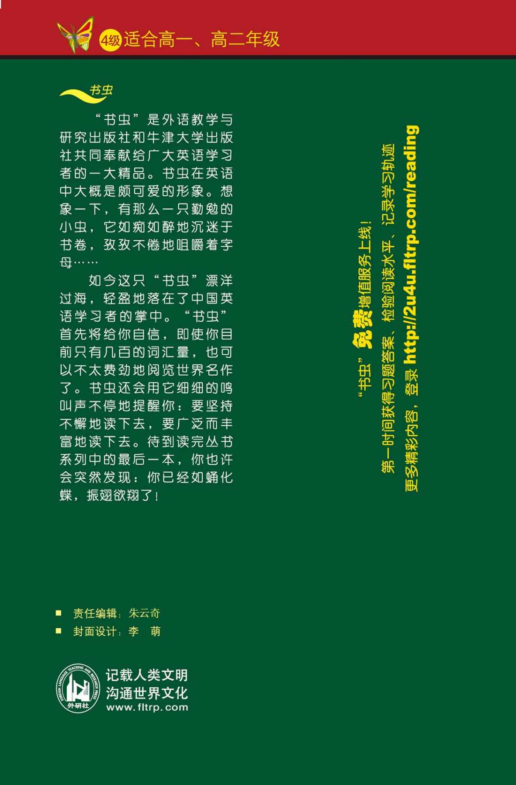